7 guides · 106 steps · full saved-image review
R2 integration prepared; upload/CDN verification pending. Ritual instructions unchanged.
satyanarayan-puja · REVIEWED1. स्थान शुद्धि व स्थापना · Prepare the space & place the deity
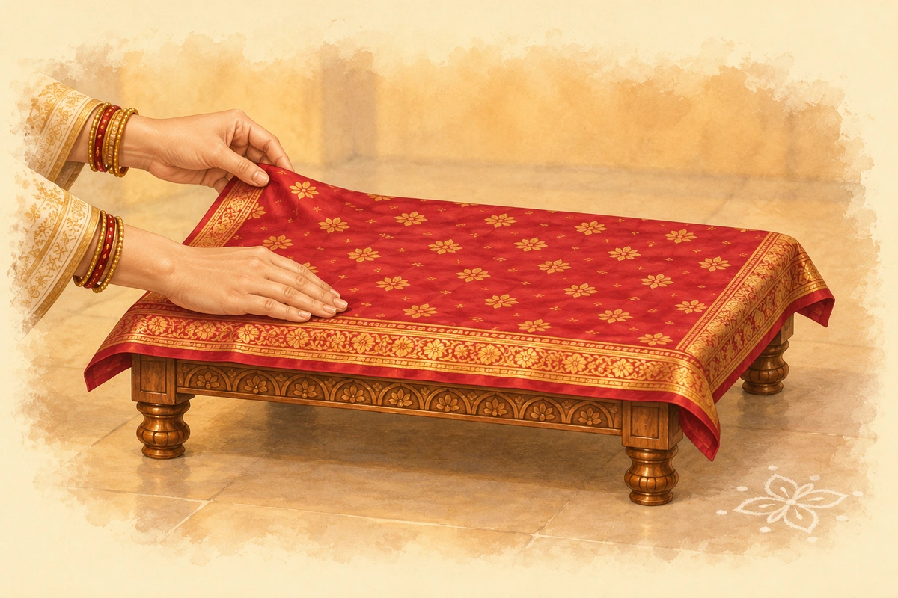
altar-preparation · R2 hash c23e1771c498b20eपूजा स्थान स्वच्छ कर चौकी पर पीला या लाल वस्त्र बिछाएँ और श्री सत्यनारायण भगवान की प्रतिमा या चित्र स्थापित करें। स्वच्छ, शान्त स्थान से पूजा में एकाग्रता आती है।
Clean the puja space, spread a yellow or red cloth on the chowki, and place the murti or picture of Shri Satyanarayan. A clean, calm space helps focus the mind for worship.
Image check: Cloth is being spread on the chowki.
Shows space preparation; deity placement and cleaning remain in text.satyanarayan-puja · UPDATED2. कलश स्थापना व दीप प्रज्वलन · Set the kalash & light the lamp
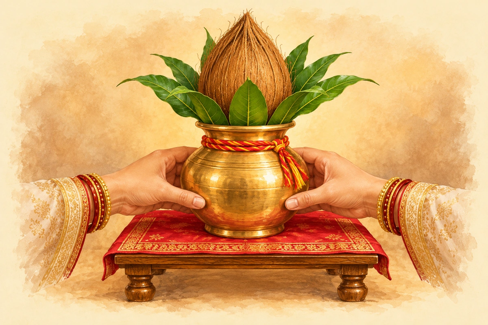
kalash · R2 hash 83d4475592cc1a6a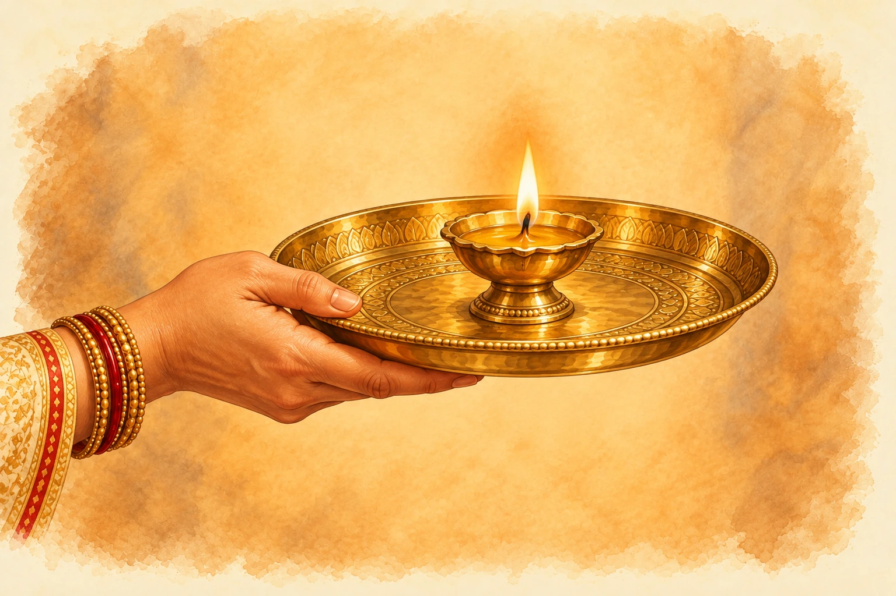
aarti-neutral · R2 hash 4792f1ad501033e2जल भरे कलश पर आम के पत्ते और नारियल रखकर चौकी के पास स्थापित करें, फिर घी का दीपक जलाएँ। कलश मंगल का और दीप पूजा का साक्षी है।
Place a water-filled kalash topped with mango leaves and a coconut beside the chowki, then light a ghee lamp. The kalash marks auspiciousness; the lamp stands witness to the vrat.
Image check: Prepared leafy coconut kalash, then a flower-free ghee-lamp plate.
Both named objects shown; the text explains symbolism.satyanarayan-puja · UPDATED3. संकल्प · Sankalp (vow)
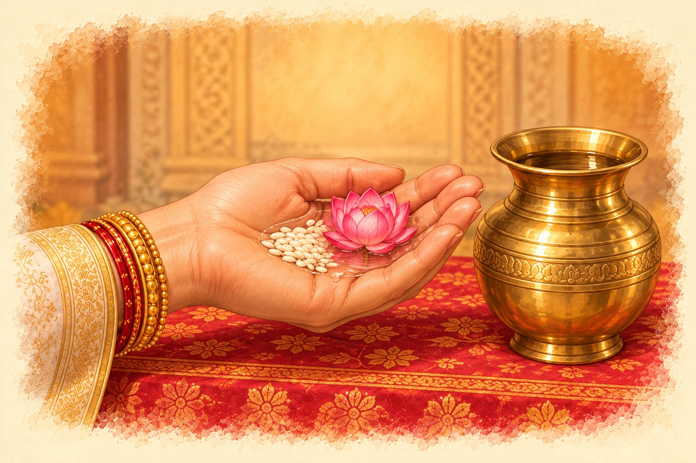
sankalp-lotus · R2 hash 57604d8f2e79624bदाहिने हाथ में जल, अक्षत और पुष्प लेकर अपना नाम, गोत्र, आज की तिथि और मनोकामना बोलते हुए श्री सत्यनारायण व्रत-पूजा का संकल्प लें, फिर जल भूमि पर छोड़ दें। संकल्प से पूजा का उद्देश्य निश्चित होता है।
Take water, akshat and a flower in your right palm; speak your name, gotra, today’s tithi and your wish, vowing to perform the Satyanarayan vrat-puja, then pour the water onto the ground. The sankalp sets the intention for the puja.
Image check: Right palm holds water, akshat and a pink lotus.
Lotus is a Vishnu-appropriate example; personal names, tithi and water release remain text.satyanarayan-puja · REVIEWED4. ध्यान · Dhyana (meditation)
prayer · R2 hash 6b951bae026329d6
नेत्र बन्द कर श्री सत्यनारायण भगवान का ध्यान करें और ध्यान-मन्त्र बोलें। ध्यान से मन पूजा में स्थिर होता है।
Close your eyes, meditate on Lord Satyanarayan, and recite the dhyana mantra. Dhyana steadies the mind before the offerings begin.
Image check: Seated devotee with folded hands.
Meditative focus; does not invent mantra or deity form.satyanarayan-puja · UPDATED5. आवाहन · Avahana (invocation)
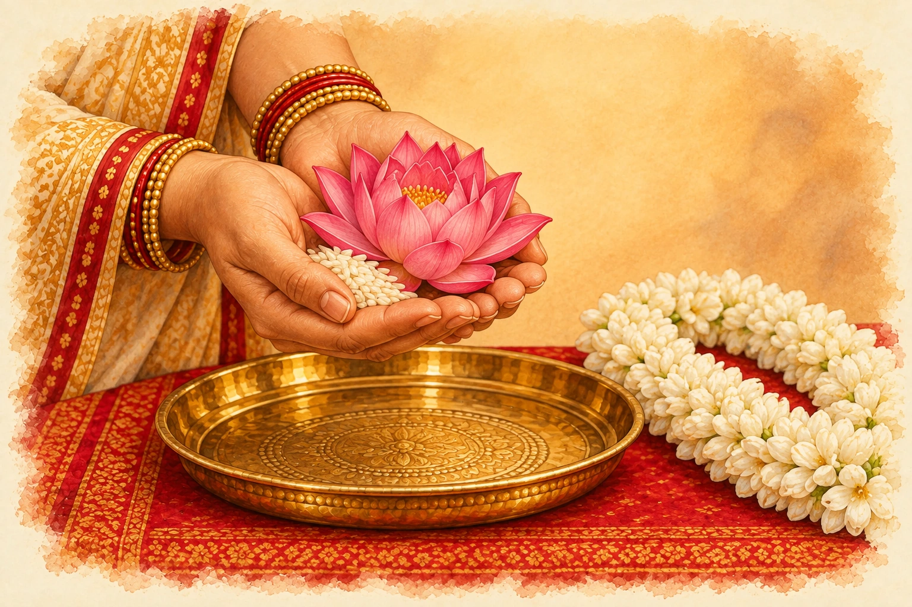
vishnu-flowers · R2 hash 52d469b245171193हाथ में अक्षत-पुष्प लेकर आवाहन-मन्त्र बोलते हुए भगवान का आवाहन करें और अक्षत-पुष्प प्रतिमा के सम्मुख अर्पित करें। आवाहन से भगवान पूजा में आमंत्रित होते हैं।
With akshat and flowers in your joined palms, recite the avahan mantra inviting the Lord, and place them before the murti. Avahana welcomes the Lord into the puja.
Image check: Cupped hands hold a lotus and akshat before a plate.
White garland is a Vishnu offering; invocation words remain text/mantra.satyanarayan-puja · UPDATED6. आसन · Asana (offering a seat)
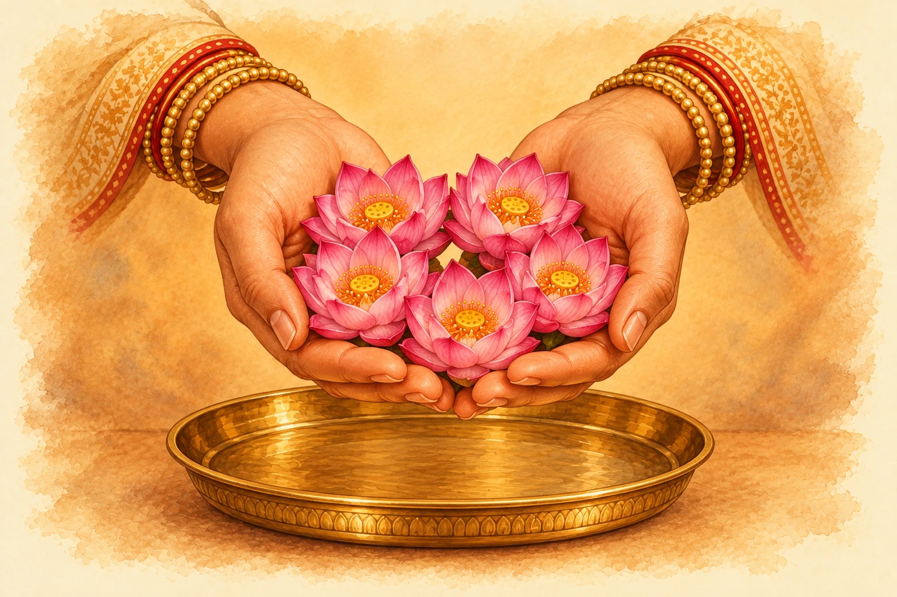
vishnu-asana-flowers · R2 hash 0c9001907a654db7पाँच पुष्प अंजलि में लेकर मन्त्र बोलते हुए प्रतिमा के सम्मुख छोड़ें — यह भगवान को आसन अर्पित करना है।
Take five flowers in anjali and release them before the murti while reciting the mantra — this offers the Lord a seat.
Image check: Exactly five pink lotus blossoms held in joined palms.
Five visible centres counted; symbolic asana, not a physical chair.satyanarayan-puja · UPDATED7. स्नान · Snana (bathing)
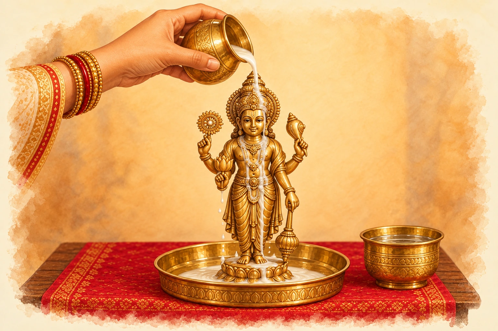
satyanarayan-snana · R2 hash 11b8acb6b39b64a8भगवान को पहले जल से, फिर पंचामृत से और अन्त में पुनः शुद्ध जल से स्नान कराएँ। स्नान शुद्धि और सेवा का उपचार है।
Bathe the deity first with water, then with panchamrit, and finally with pure water again. Snana is the offering of purification and service.
Image check: Panchamrit poured over a metallic four-armed Vishnu murti in a receiving tray; clean water alongside.
Illustrates the central bath; the water–panchamrit–water order remains in text.satyanarayan-puja · UPDATED8. वस्त्र व यज्ञोपवीत · Vastra & yajnopavita
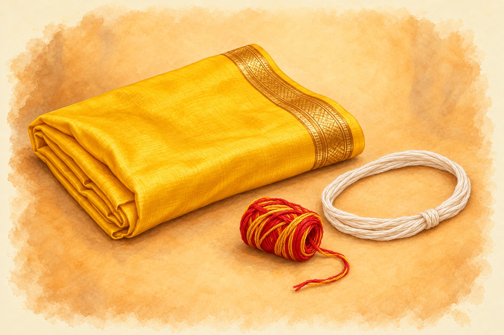
vishnu-vastra-yajnopavita · R2 hash 844996094591fd62भगवान को अंगवस्त्र (या कलावा) और यज्ञोपवीत अर्पित करें। वस्त्र सम्मान का उपचार है।
Offer the angavastram (or kalawa) and the sacred thread to the deity. Clothing is the offering of honour.
Image check: Yellow angavastram, loose white yajnopavita and separate mauli.
Includes sacred thread; no person/thread-side convention demonstrated.satyanarayan-puja · UPDATED9. गन्ध-अक्षत · Gandha & akshat
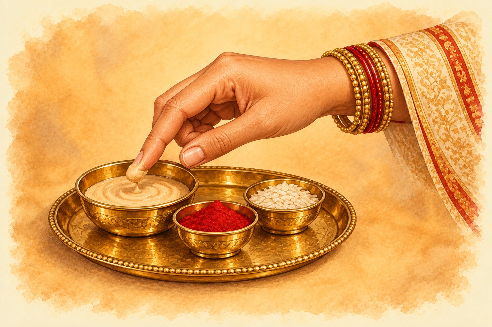
chandan-akshat · R2 hash bfd6e3579526188dचन्दन/रोली से भगवान को तिलक करें और अक्षत अर्पित करें। गन्ध सुगन्ध और आदर का उपचार है।
Apply a chandan/roli tilak to the deity and offer akshat. Gandha is the offering of fragrance and reverence.
Image check: Beige sandal paste, red roli and white akshat.
Removed unrelated turmeric/sindoor assortment from this step.satyanarayan-puja · UPDATED10. पुष्प · Pushpa (flowers)
vishnu-flowers · R2 hash 52d469b245171193
भगवान को पुष्प और माला अर्पित करें। पुष्प भक्ति की कोमलता का प्रतीक हैं।
Offer flowers and the garland to the deity. Flowers stand for the tenderness of devotion.
Image check: Lotus and akshat offered, complete white flower garland alongside.
Flowers and garland shown; no hibiscus or durva reuse.satyanarayan-puja · UPDATED11. धूप · Dhoop (incense)
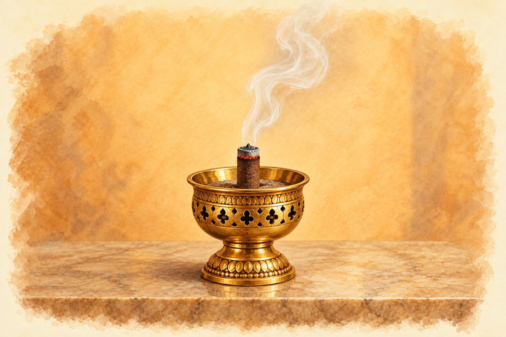
dhoop-only · R2 hash 66e1d794016709f0धूप/अगरबत्ती जलाकर भगवान को धूप अर्पित करें (दिखाएँ)।
Light the dhoop/incense and offer its fragrance to the deity.
Image check: One smoking dhoop burner.
Incense only; no lamp or deity-specific flowers added.satyanarayan-puja · UPDATED12. दीप · Dipa (lamp)
aarti-neutral · R2 hash 4792f1ad501033e2
घी का दीपक भगवान के सम्मुख दिखाएँ। दीप ज्ञान के प्रकाश का प्रतीक है।
Show the lit ghee lamp before the deity. The lamp stands for the light of knowledge.
Image check: Hand holds a brass plate with a ghee lamp.
Shows the named lamp option; no cross-deity flower decoration.satyanarayan-puja · REVIEWED13. नैवेद्य · Naivedya (food offering)
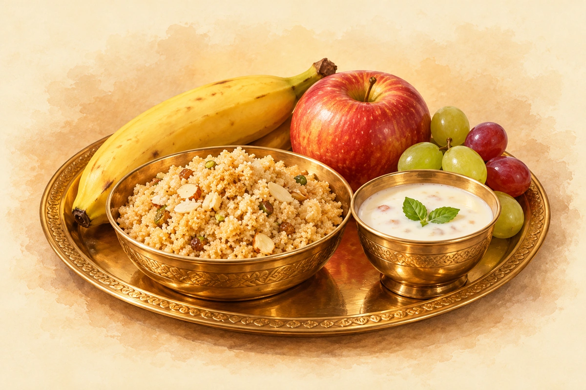
satyanarayan-naivedya · R2 hash 85e348f07e99461aपंजीरी/सूजी का प्रसाद, ऋतुफल, केले और पंचामृत तुलसी दल सहित भगवान को अर्पित करें। नैवेद्य कृतज्ञता का उपचार है।
Offer the panjiri/semolina prasad, seasonal fruits, bananas and panchamrit with tulsi leaves to the deity. Naivedya is the offering of gratitude.
Image check: Panjiri/semolina bowl, banana, fruit and panchamrit with tulsi.
Matches this specific prasad; no generic modak plate.satyanarayan-puja · REVIEWED14. श्री सत्यनारायण व्रत कथा · Satyanarayan vrat katha
scripture · R2 hash 34c0d266398bdfab
परिवार सहित श्री सत्यनारायण व्रत कथा के पाँचों अध्याय पढ़ें या सुनें। कथा-श्रवण ही इस व्रत का हृदय है।
Read or listen to all five chapters of the Satyanarayan vrat katha with the family. Hearing the katha is the heart of this vrat.
Image check: Open book on a reading stand.
Reading cue only; exact five-chapter katha is provided by the hand-off.satyanarayan-puja · UPDATED15. आरती · Aarti
aarti-neutral · R2 hash 4792f1ad501033e2
कपूर या घी के दीप से भगवान की आरती करें और परिवार सहित ॐ जय जगदीश हरे गाएँ।
Offer aarti with lit camphor or a ghee lamp and sing Om Jai Jagdish Hare with the family.
Image check: Ghee lamp on an aarti plate.
Shows the allowed ghee-lamp option; family singing/camphor alternative remain text.satyanarayan-puja · REVIEWED16. क्षमा-प्रार्थना व प्रसाद · Kshama-prarthana & prasad
satyanarayan-naivedya · R2 hash 85e348f07e99461a
परिक्रमा कर क्षमा-प्रार्थना बोलें, फिर सभी को पंजीरी-पंचामृत का प्रसाद बाँटें। त्रुटियों के लिए क्षमा माँगकर पूजा पूर्ण होती है।
Circumambulate, recite the kshama-prarthana, then distribute the panjiri and panchamrit prasad to everyone. Asking forgiveness for lapses completes the puja.
Image check: The same Satyanarayan panjiri, fruit and panchamrit prasad.
Shows correct prasad; circumambulation, prayer and distribution are text instructions.diwali-lakshmi-ganesh-puja · REVIEWED1. स्थान शुद्धि व चौकी सज्जा · Clean the space & prepare the chowki
altar-preparation · R2 hash c23e1771c498b20e
पूजा स्थान साफ कर रंगोली बनाएँ, चौकी पर लाल वस्त्र बिछाएँ और दोनों ओर दीप रखने की सुरक्षित जगह बनाएँ।
Clean the puja space, make a rangoli, spread a red cloth over the chowki, and leave safe space for lamps on both sides.
Image check: Hands spread red cloth on a clean chowki.
Shows altar preparation; rangoli and safe lamp spaces remain in text.diwali-lakshmi-ganesh-puja · REVIEWED2. लक्ष्मी-गणेश स्थापना · Place Lakshmi and Ganesha
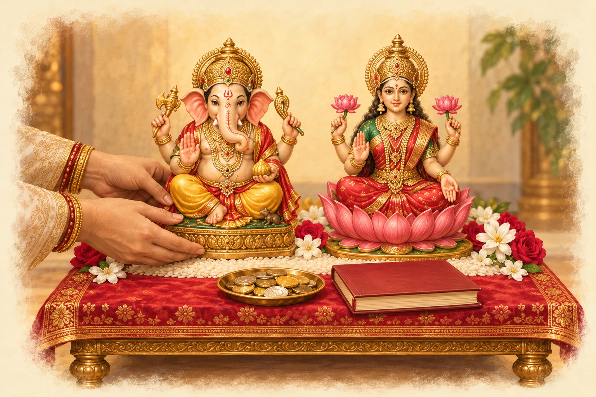
lakshmi-ganesha-sthapana · R2 hash f4ef04a2162f4cdaअक्षत के आसन पर श्री गणेश को बाईं ओर और माँ लक्ष्मी को उनकी दाईं ओर स्थापित करें; सिक्के या बही-खाता सामने रखें।
Seat Shri Ganesha on the left and Maa Lakshmi on His right over a bed of akshat; place coins or the account book in front.
Image check: Ganesh at image left, Lakshmi at image right, coins and account book before them.
Matches the stored household placement instruction; no new direction rule.diwali-lakshmi-ganesh-puja · UPDATED3. आचमन व आत्म-शुद्धि · Achamana & self-purification
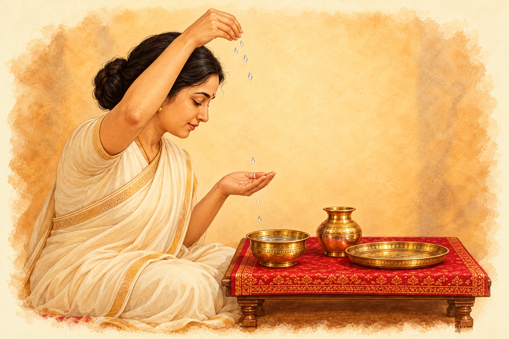
self-water-sprinkling · R2 hash ca33afe08003ce09स्वच्छ होकर आसन ग्रहण करें, आचमन करें और अपने ऊपर तथा सामग्री पर थोड़ा शुद्ध जल छिड़कें।
Sit after bathing, perform achamana, and sprinkle a little clean water over yourself and the puja materials.
Image check: Devotee sprinkles clear water toward self and clean vessels.
Self/material purification, not a deity bath; achamana remains text.diwali-lakshmi-ganesh-puja · UPDATED4. संकल्प · Sankalp (vow)
sankalp-lotus · R2 hash 57604d8f2e79624b
जल, अक्षत और पुष्प लेकर अपना नाम, गोत्र और दीपावली की तिथि बोलते हुए लक्ष्मी-गणेश पूजन का संकल्प लें; फिर जल भूमि पर छोड़ें।
Hold water, akshat and a flower; state your name, gotra and the Diwali tithi, resolve to perform Lakshmi-Ganesh puja, then release the water.
Image check: Right palm holds water, akshat and lotus.
A suitable flower for the combined worship; personal formula remains text.diwali-lakshmi-ganesh-puja · UPDATED5. कलश स्थापना व दीप प्रज्वलन · Set the kalash & light the lamp
kalash · R2 hash 83d4475592cc1a6aaarti-neutral · R2 hash 4792f1ad501033e2
जल भरे कलश पर आम के पत्ते और नारियल रखकर मौली बाँधें, फिर घी का दीपक जलाएँ। दीप को कभी बिना देखरेख न छोड़ें।
Top the water-filled kalash with mango leaves and a coconut, tie mauli around it, then light a ghee lamp. Never leave the flame unattended.
Image check: Prepared coconut-leaf kalash followed by a flower-free ghee lamp.
Both installation and lamp actions represented; flame supervision remains text.diwali-lakshmi-ganesh-puja · UPDATED6. श्री गणेश ध्यान व आवाहन · Ganesha dhyana & avahana
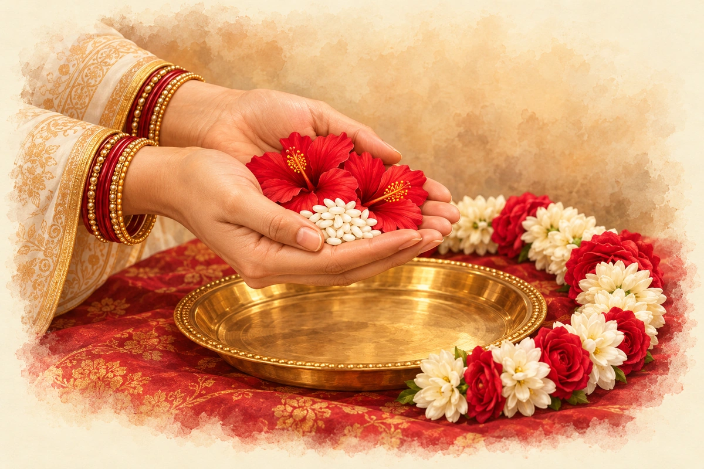
flowers-akshat · R2 hash 7fb6481546fe5cb9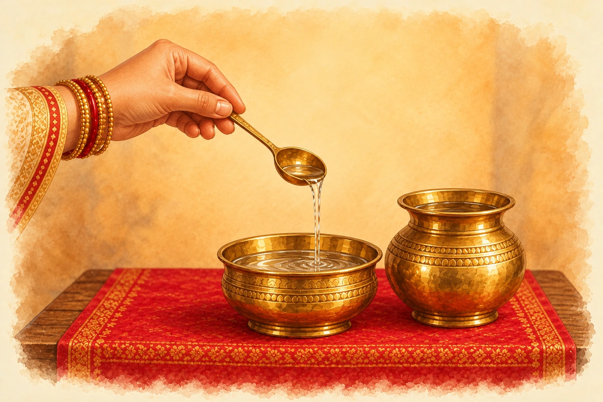
water-offering-neutral · R2 hash a4d76ca3aa0562b2हाथ में अक्षत-पुष्प लेकर श्री गणेश का ध्यान और आवाहन करें, फिर उन्हें आसन, पाद्य, अर्घ्य और आचमन का जल प्रतीक रूप में अर्पित करें।
Meditate on and invoke Shri Ganesha with akshat and flowers, then symbolically offer a seat and water for padya, arghya and achamana.
Image check: Flower/akshat offering hands, followed by a clear-water spoon offering.
Removed later durva scene from invocation; named water upacharas remain symbolic.diwali-lakshmi-ganesh-puja · REVIEWED7. गणेश वन्दना · Ganesha vandana
prayer · R2 hash 6b951bae026329d6
आवाहन के बाद "वक्रतुण्ड महाकाय" गणेश वन्दना का पाठ करें — निर्विघ्न पूजन की प्रार्थना।
After the avahana, recite the "Vakratunda Mahakaya" Ganesha vandana — a prayer that the puja proceed unobstructed.
Image check: Folded-hands seated prayer.
The exact Ganesha vandana remains the shipped-text hand-off.diwali-lakshmi-ganesh-puja · UPDATED8. गणेश स्नान व उपचार · Ganesha snana & offerings
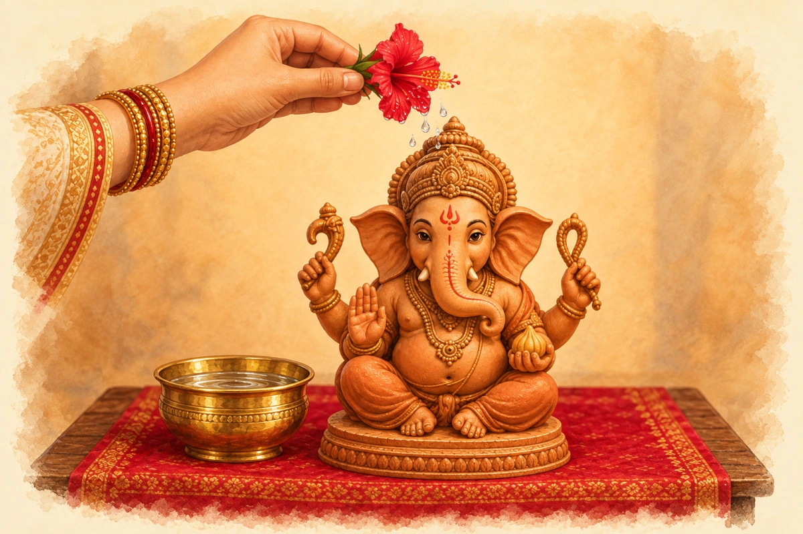
ganesha-snana · R2 hash ea8268beb3687160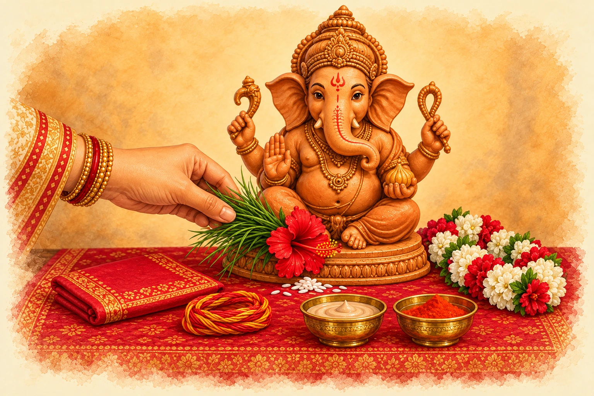
ganesha-upachara · R2 hash 74a55850bb385719प्रतिमा के अनुसार जल या प्रतीकात्मक स्नान कराएँ; वस्त्र-मौली, चन्दन, अक्षत, सिन्दूर, पुष्प और दूर्वा अर्पित करें।
According to the murti material, offer a water bath or symbolic snana; then offer cloth or mauli, chandan, akshat, sindoor, flowers and durva.
Image check: Symbolic Ganesh flower-water bath, then durva/hibiscus/akshat with cloth, mauli, chandan and sindoor.
Two original clauses paired with their images; no food/panchamrit ingredient picture.diwali-lakshmi-ganesh-puja · UPDATED9. गणेश नैवेद्य · Ganesha naivedya
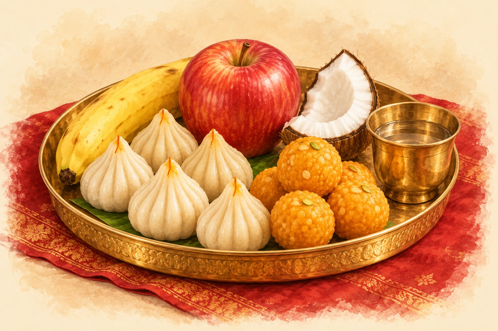
naivedya · R2 hash 038e20f66c98e43cdhoop-deep-neutral · R2 hash 7adfc5689a875991श्री गणेश को मिठाई, फल और जल अर्पित करें; नैवेद्य के बाद धूप और दीप दिखाएँ।
Offer sweets, fruit and water to Shri Ganesha; then present dhoop and the lit lamp.
Image check: Sweets, fruit and water, followed by dhoop and ghee lamp.
Both authored clauses represented; modak/laddoo are examples within sweets.diwali-lakshmi-ganesh-puja · UPDATED10. महालक्ष्मी ध्यान व आवाहन · Mahalakshmi dhyana & avahana
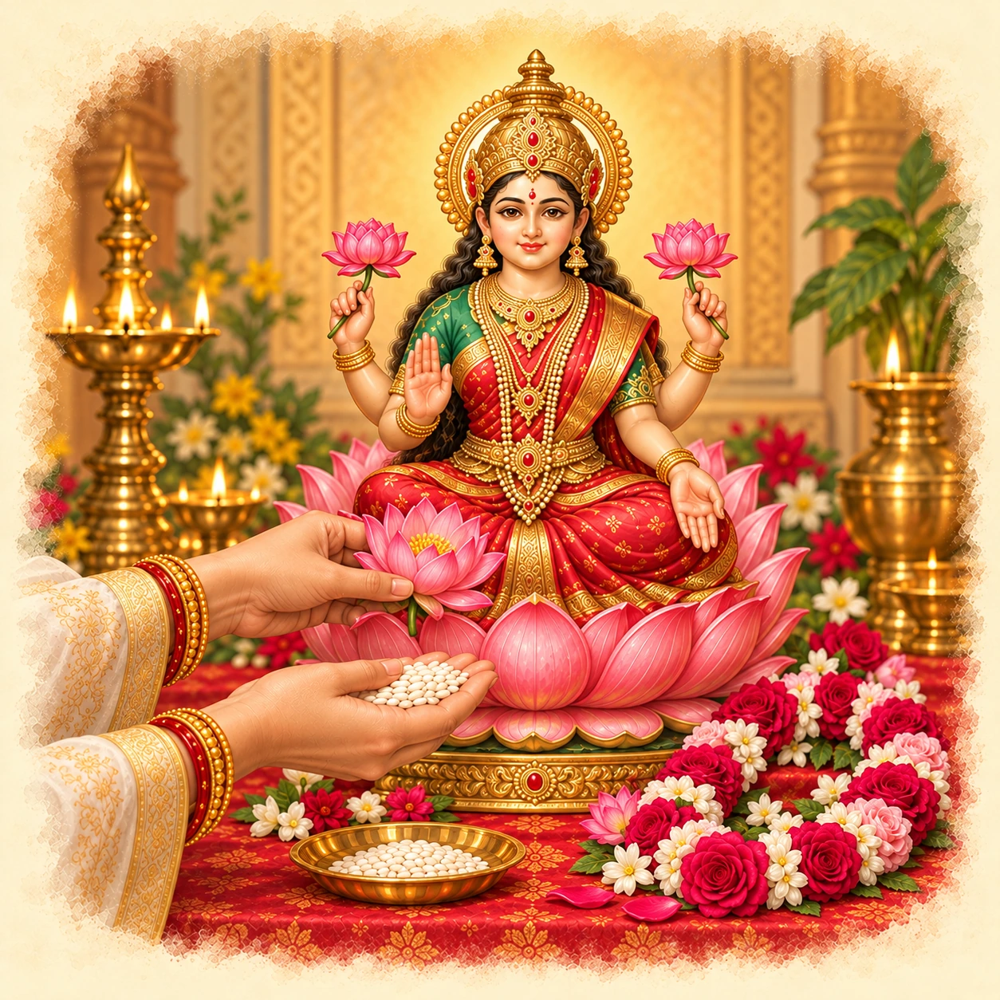
lakshmi-lotus · R2 hash 79032b80ff53ec43कमल या लाल पुष्प हाथ में लेकर माँ महालक्ष्मी का ध्यान और आवाहन करें, फिर पुष्प उनके चरणों में रखें।
Hold a lotus or red flower, meditate on and invoke Maa Mahalakshmi, then place the flower at Her feet.
Image check: Pink lotus offered to Maa Lakshmi with akshat.
Lotus replaces the generic hibiscus focus; red-flower alternative remains allowed by text.diwali-lakshmi-ganesh-puja · UPDATED11. लक्ष्मी स्नान · Lakshmi snana
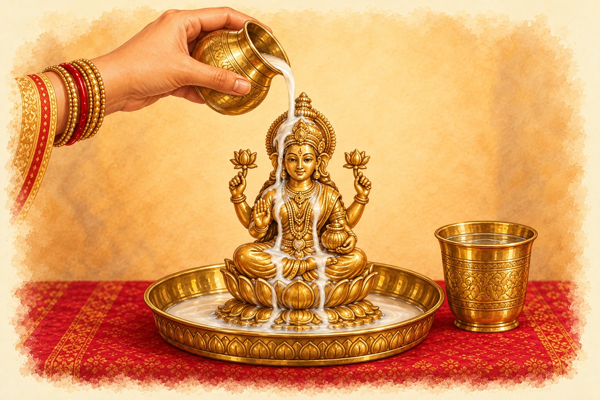
lakshmi-metal-snana · R2 hash c215f1c26b9a883b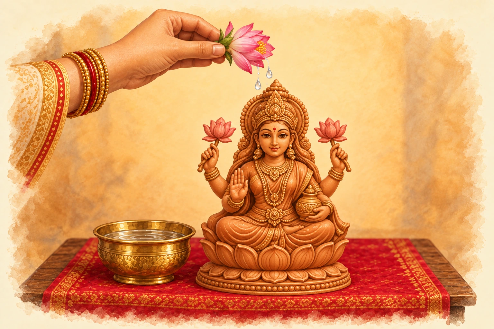
lakshmi-symbolic-snana · R2 hash df8f2e825d19c04eधातु की प्रतिमा हो तो पंचामृत और शुद्ध जल से स्नान कराएँ; चित्र या मिट्टी की प्रतिमा पर केवल जल-पुष्प से प्रतीकात्मक स्नान करें।
For a metal murti, bathe with panchamrit and clean water; for a picture or clay murti, offer symbolic snana with water and flowers only.
Image check: Metal Lakshmi murti receives panchamrit; separate clay Lakshmi gets a few lotus-water droplets.
These are material-dependent alternatives, explicitly captioned from original text, not two required baths.diwali-lakshmi-ganesh-puja · REVIEWED12. वस्त्र व शृंगार · Vastra & adornment
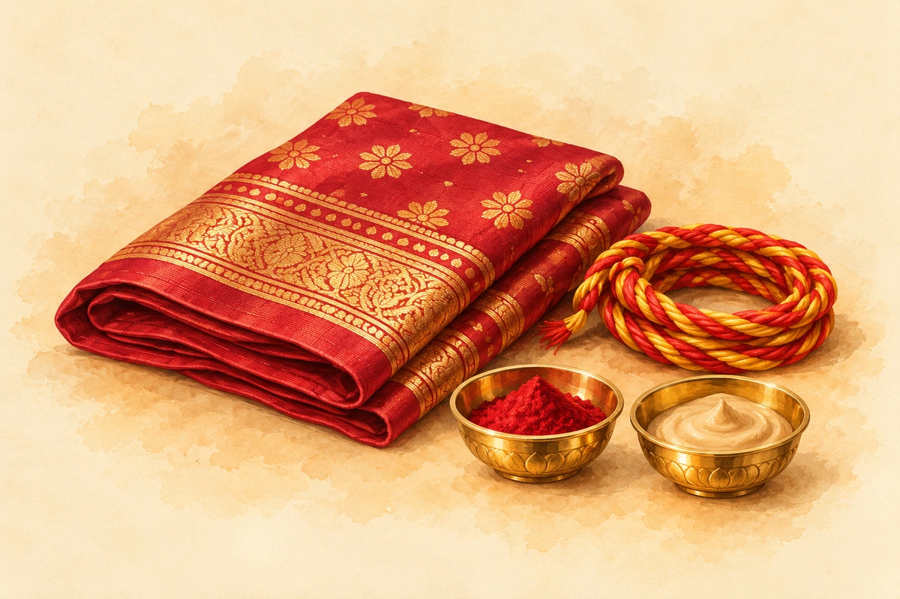
vastra-shringar · R2 hash 96473da26477f6a6माँ लक्ष्मी को वस्त्र या मौली, कुमकुम, सिन्दूर, चन्दन और इत्र अर्पित करें।
Offer Maa Lakshmi cloth or mauli, kumkum, sindoor, chandan and perfume.
Image check: Folded red cloth/mauli and shringar bowls.
Relevant materials; perfume and each application are not separately demonstrated.diwali-lakshmi-ganesh-puja · UPDATED13. पुष्प व अक्षत · Flowers & akshat
lakshmi-lotus · R2 hash 79032b80ff53ec43
कमल, लाल पुष्प या उपलब्ध शुभ पुष्प, माला और अक्षत अर्पित करें।
Offer lotus, red flowers or other available auspicious flowers, along with a garland and akshat.
Image check: Pink lotus and akshat offered to Lakshmi, with a complete flower garland.
Matches lotus/flowers/garland/akshat; no grass or tulsi accidentally substituted.diwali-lakshmi-ganesh-puja · UPDATED14. धूप व दीप · Dhoop & dipa
dhoop-deep-neutral · R2 hash 7adfc5689a875991
माँ लक्ष्मी और श्री गणेश के सम्मुख धूप दिखाएँ, फिर घी का दीप घुमाकर प्रकाश अर्पित करें।
Present dhoop before Maa Lakshmi and Shri Ganesha, then circle the ghee lamp to offer its light.
Image check: Smoking dhoop and ghee lamp on a clean stone surface.
No flowers near flame; deity identity and circling action remain text.diwali-lakshmi-ganesh-puja · UPDATED15. नैवेद्य · Naivedya
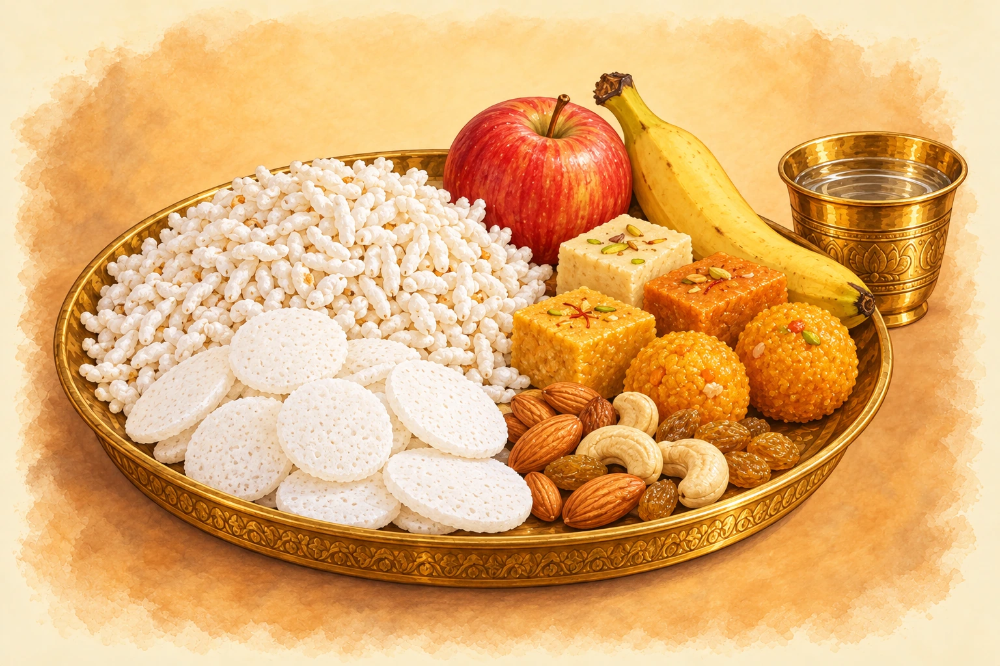
diwali-naivedya · R2 hash 1e981b2bb7a7a0ebखील, बताशे, मिठाई, फल, मेवे और जल अर्पित करें; परिवार का भोजन भी भावपूर्वक सामने रखा जा सकता है।
Offer puffed rice, batasha, sweets, fruit, dry fruits and water; the family meal may also be placed before the deities with devotion.
Image check: Distinct kheel, batasha, mithai, dry fruits, fresh fruit and water.
Replaces generic modak/coconut tray; optional family meal remains text.diwali-lakshmi-ganesh-puja · REVIEWED16. महालक्ष्मी प्रार्थना · Mahalakshmi prayer
scripture · R2 hash 34c0d266398bdfab
परिवार सहित महालक्ष्म्यष्टकम् का पाठ करें और धर्मपूर्वक समृद्धि तथा सद्बुद्धि की प्रार्थना करें।
Read the Mahalakshmi Ashtakam with the family and pray for righteous prosperity and good judgment.
Image check: Open book on a stand.
The Mahalakshmi Ashtakam is identified by the hand-off, not generated lettering.diwali-lakshmi-ganesh-puja · UPDATED17. श्री गणेश आरती · Shri Ganesha aarti
aarti-neutral · R2 hash 4792f1ad501033e2
कपूर या घी के दीप से श्री गणेश की आरती करें और परिवार सहित जय गणेश देवा गाएँ।
Offer aarti to Shri Ganesha with camphor or a ghee lamp and sing Jai Ganesh Deva with the family.
Image check: Flower-free ghee-lamp aarti plate.
Singing and camphor alternative remain text; no invented flower offering.diwali-lakshmi-ganesh-puja · UPDATED18. महालक्ष्मी आरती व पुष्पांजलि · Mahalakshmi aarti & pushpanjali
aarti-neutral · R2 hash 4792f1ad501033e2lakshmi-lotus · R2 hash 79032b80ff53ec43
माँ लक्ष्मी की पारिवारिक परम्परा वाली आरती करें, फिर हाथ में पुष्प लेकर दोनों देवताओं को पुष्पांजलि अर्पित करें।
Sing the Maa Lakshmi aarti followed in your family, then hold flowers and offer pushpanjali to both deities.
Image check: Aarti plate, followed by Lakshmi lotus/akshat offering.
Lamp and pushpanjali cues; flowers are also offered to Ganesh as the unchanged text directs.diwali-lakshmi-ganesh-puja · UPDATED19. दीप श्लोक · Deepa shloka
aarti-neutral · R2 hash 4792f1ad501033e2
दीपमाला सजाने से पहले "शुभं करोति कल्याणम्" दीप श्लोक का पाठ करें — दीप-ज्योति को नमन।
Before laying out the deepmala, recite the "Shubham Karoti Kalyanam" deepa shloka — salutations to the light of the lamp.
Image check: Single ghee-lamp aarti plate.
Light salutation; exact Shubham Karoti reading remains the hand-off.diwali-lakshmi-ganesh-puja · UPDATED20. दीपमाला व क्षमा-प्रार्थना · Deepmala & forgiveness prayer
deepmala · R2 hash 4cdfc8e9d392bcf6
घर के सुरक्षित स्थानों पर दीप रखें, पूजा में हुई त्रुटियों के लिए क्षमा माँगें और प्रसाद बाँटें। सभी दीपों पर निगरानी रखें।
Place lamps in safe parts of the home, ask forgiveness for any lapses, and share prasad. Keep every flame supervised.
Image check: A hand sets spaced clay diyas on a stone home ledge.
Deepmala action replaces incense still-life; forgiveness and sharing prasad remain text.ganesh-chaturthi-sthapana · REVIEWED1. स्थान व चौकी सज्जा · Prepare the shrine and chowki
altar-preparation · R2 hash c23e1771c498b20e
स्वच्छ स्थान पर चौकी रखकर लाल या पीला वस्त्र बिछाएँ और अक्षत का आसन बनाएँ।
Place the chowki in a clean area, cover it with red or yellow cloth, and make a seat of akshat.
Image check: Red cloth spread over clean chowki.
Illustrates preparation; akshat seat described in text.ganesh-chaturthi-sthapana · UPDATED2. कलश व प्रतिमा तैयार करें · Prepare the kalash and murti
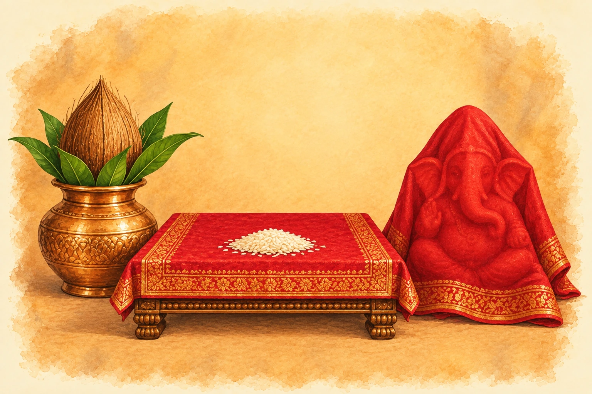
covered-ganesha-kalash · R2 hash 2da0a92d2643c181कलश स्थापित करें और ढकी हुई मिट्टी की प्रतिमा चौकी के पास रखें; स्थापना से पहले प्रतिमा को स्नान न कराएँ।
Set the kalash and keep the covered clay murti beside the chowki; do not bathe a clay murti before installation.
Image check: Covered Ganesh murti beside an unoccupied chowki, with kalash nearby.
No pre-installation bath or exposed bathing action.ganesh-chaturthi-sthapana · REVIEWED3. संकल्प · Sankalp (vow)
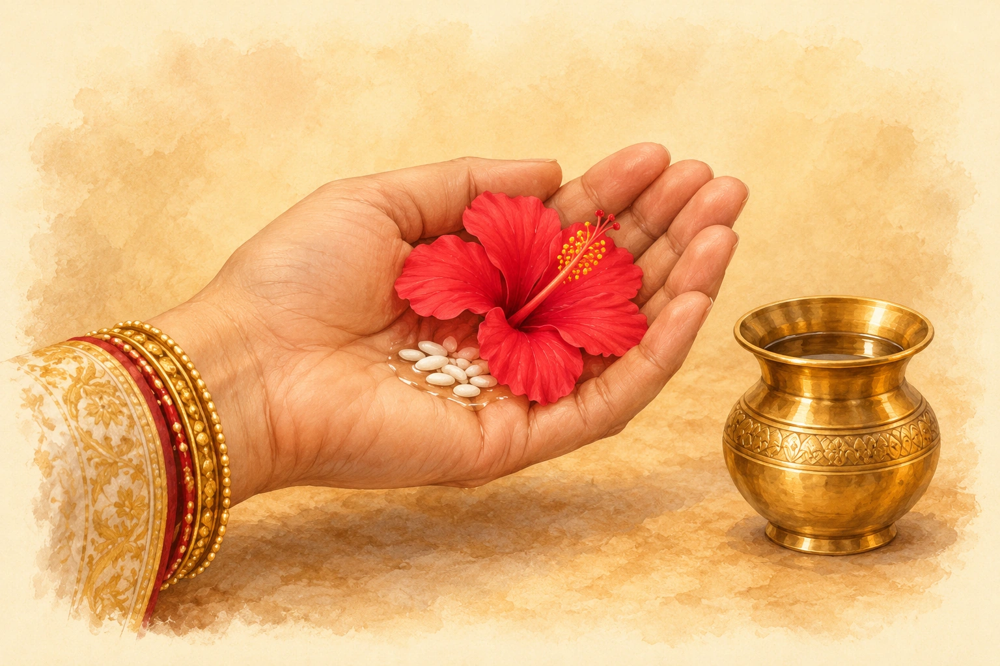
sankalp · R2 hash 68b4497c5bd261a8जल, अक्षत और पुष्प लेकर अपना नाम, गोत्र और तिथि बोलें तथा गणेश स्थापना और पूजन का संकल्प लें।
Hold water, akshat and a flower; state your name, gotra and tithi, and resolve to install and worship Shri Ganesha.
Image check: Right palm with water, akshat and red hibiscus.
Ganesha-suitable red flower; no tulsi.ganesh-chaturthi-sthapana · UPDATED4. आवाहन व प्रतिष्ठापन · Avahana & pratishthapana
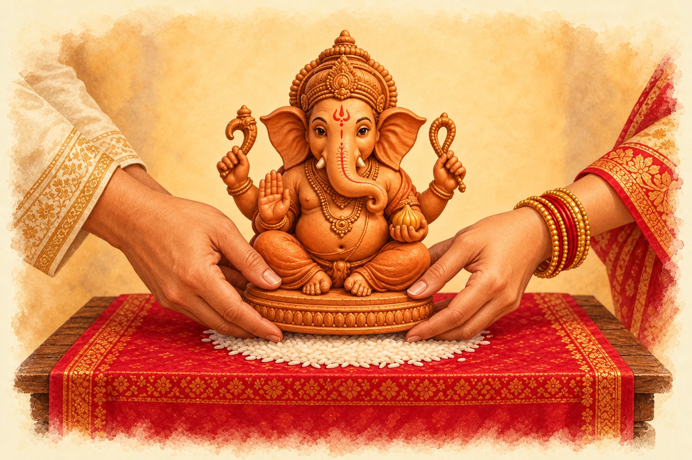
ganesha-sthapana · R2 hash ca88fe1053ebc5d1प्रतिमा को अक्षत के आसन पर स्थापित कर श्री गणेश का आवाहन करें। घर में नित्य पूजित स्थायी प्रतिमा हो तो आवाहन-प्रतिष्ठा दोबारा न करें।
Seat the murti on the akshat and invoke Shri Ganesha. Skip a new avahana-pratishtha for a permanent murti already worshipped daily.
Image check: Hands seat complete Ganesh murti onto white akshat.
Installation replaces the later durva-offering scene; permanent-murti exception remains text.ganesh-chaturthi-sthapana · REVIEWED5. गणेश वन्दना · Ganesha vandana
prayer · R2 hash 6b951bae026329d6
स्थापना के बाद "वक्रतुण्ड महाकाय" गणेश वन्दना का पाठ करें — सभी विघ्नों के नाश की प्रार्थना।
After the installation, recite the "Vakratunda Mahakaya" Ganesha vandana — a prayer for the removal of all obstacles.
Image check: Seated folded-hands prayer.
Exact vandana supplied through hand-off.ganesh-chaturthi-sthapana · UPDATED6. आसन व पाद्य · Asana & padya
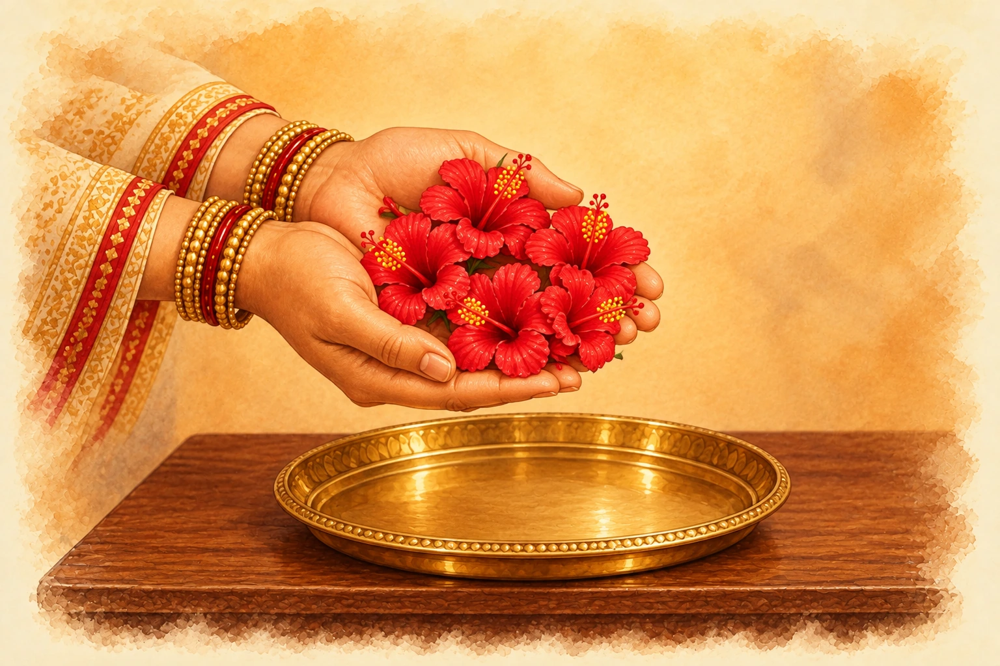
asana-five-flowers · R2 hash c156eb2898085cefwater-offering-neutral · R2 hash a4d76ca3aa0562b2पाँच पुष्प से आसन अर्पित करें और चरण प्रक्षालन के लिए थोड़ा जल प्रतीक रूप में अर्पित करें।
Offer a seat with five flowers and symbolically offer a little water for washing the feet.
Image check: Exactly five red hibiscus flowers in joined palms, followed by a little clear-water offering.
Both asana and padya shown; five flower heads counted.ganesh-chaturthi-sthapana · UPDATED7. अर्घ्य व आचमन · Arghya & achamana
water-offering-neutral · R2 hash a4d76ca3aa0562b2
सुगन्धित जल से अर्घ्य दें और आचमन के लिए शुद्ध जल अर्पित करें।
Offer scented water as arghya and clean water for achamana.
Image check: Clear water from a brass spoon into a receiving bowl; a separate water pot.
Symbolic arghya/achamana, no milk or unrelated deity.ganesh-chaturthi-sthapana · REVIEWED8. स्नान · Snana
ganesha-snana · R2 hash ea8268beb3687160
मिट्टी की प्रतिमा पर पुष्प से जल के छींटे देकर प्रतीकात्मक स्नान कराएँ; धातु की प्रतिमा हो तो ही पंचामृत और जल प्रयोग करें।
For a clay murti, offer symbolic snana by sprinkling water with a flower; use panchamrit and water only for a suitable metal murti.
Image check: Clay Ganesh receives a few clear-water droplets from a flower.
Shows the clay-murti option; metal/panchamrit alternative remains conditional in text.ganesh-chaturthi-sthapana · UPDATED9. वस्त्र व यज्ञोपवीत · Vastra & yajnopavita
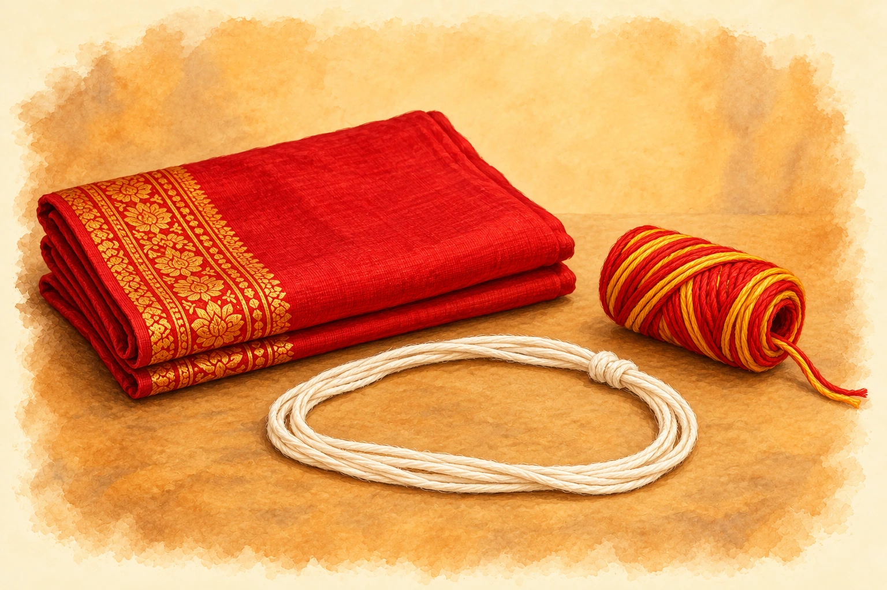
vastra-yajnopavita · R2 hash 1c1d5632b760f350छोटा वस्त्र या मौली और यज्ञोपवीत अर्पित करें; प्रतिमा पर बल लगाकर कुछ न बाँधें।
Offer a small cloth or mauli and the sacred thread; do not tie anything tightly around the murti.
Image check: Red cloth, mauli and a separate loose white sacred thread.
No tight tying or thread position depicted.ganesh-chaturthi-sthapana · REVIEWED10. गन्ध व सिन्दूर · Gandha & sindoor
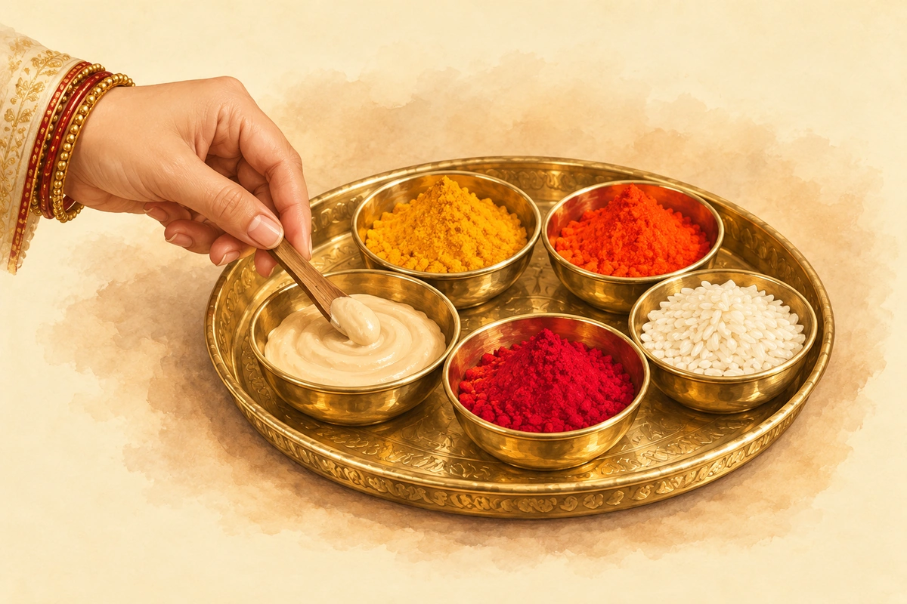
gandha · R2 hash d59f19ec3a5fdfe9चन्दन या अष्टगन्ध, हल्दी, रोली और सिन्दूर अर्पित करें। मिट्टी की प्रतिमा पर बहुत कम द्रव लगाएँ।
Offer chandan or ashtagandha, turmeric, roli and sindoor. Use very little liquid on a clay murti.
Image check: Chandan and coloured powder bowls with akshat.
Matches chandan/ashtagandha, turmeric, roli and sindoor material group; minimal liquid remains text.ganesh-chaturthi-sthapana · REVIEWED11. पुष्प व दूर्वा · Flowers & durva
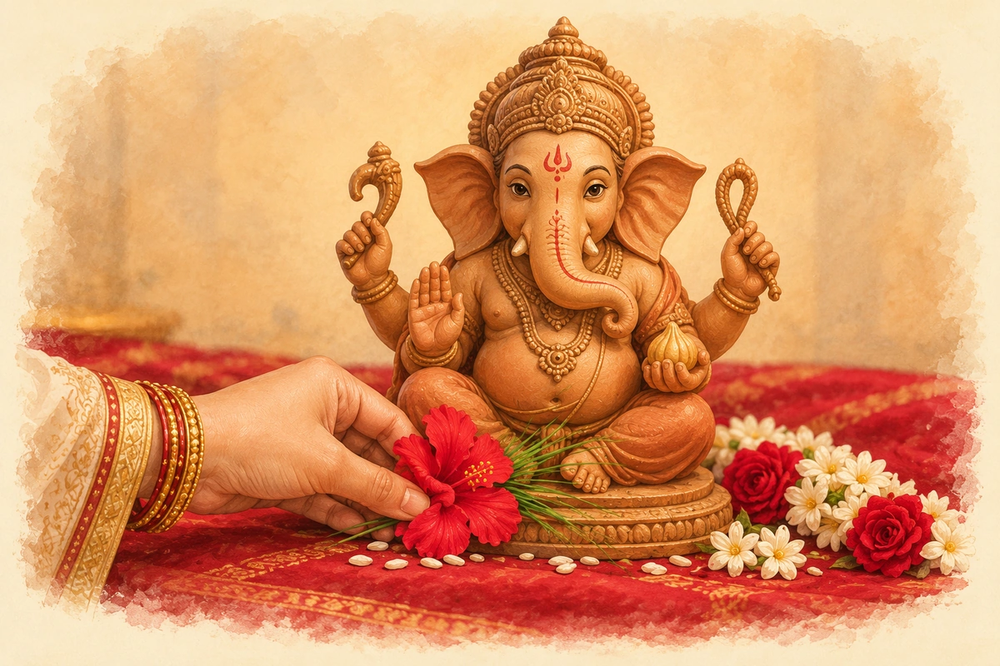
ganesha-offering · R2 hash c588134d9e0e354cलाल पुष्प, माला और स्वच्छ दूर्वा अर्पित करें; उपलब्ध हो तो 21 दूर्वा-दल चढ़ाएँ।
Offer red flowers, a garland and clean durva; offer 21 blades when available.
Image check: Fresh green durva and red hibiscus offered to Ganesh.
Correct grass and red flower; illustration does not prescribe a blade count; 21 remains conditional in text.ganesh-chaturthi-sthapana · UPDATED12. धूप व दीप · Dhoop & dipa
dhoop-deep-neutral · R2 hash 7adfc5689a875991
धूप दिखाएँ और घी का दीपक घुमाकर प्रकाश अर्पित करें। दीप को प्रतिमा और वस्त्र से सुरक्षित दूरी पर रखें।
Present dhoop and circle the ghee lamp. Keep the flame a safe distance from the murti and cloth.
Image check: Dhoop and ghee lamp well apart on stone.
No flowers or cloth beside flames; circling remains text.ganesh-chaturthi-sthapana · REVIEWED13. मोदक नैवेद्य · Modak naivedya
naivedya · R2 hash 038e20f66c98e43c
मोदक या लड्डू, फल, नारियल और जल अर्पित करें; थोड़ी देर बाद यही प्रसाद परिवार में बाँटें।
Offer modak or laddoo, fruit, coconut and water; later share this offering as prasad.
Image check: Modaks/laddoos, fruit, coconut and clear-water cup.
Matches the explicitly named Ganesh naivedya.ganesh-chaturthi-sthapana · REVIEWED14. गणेश चतुर्थी व्रत कथा · Ganesh Chaturthi vrat katha
scripture · R2 hash 34c0d266398bdfab
परिवार सहित गणेश चतुर्थी व्रत कथा पढ़ें या सुनें।
Read or listen to the Ganesh Chaturthi vrat katha with the family.
Image check: Open book on a stand.
Exact Ganesh Chaturthi story remains a hand-off.ganesh-chaturthi-sthapana · UPDATED15. आरती · Aarti
aarti-neutral · R2 hash 4792f1ad501033e2
कपूर या घी के दीप से आरती करें और परिवार सहित जय गणेश देवा गाएँ।
Offer aarti with camphor or a ghee lamp and sing Jai Ganesh Deva with the family.
Image check: Flower-free ghee-lamp aarti plate.
Matches ghee-lamp alternative; exact Jai Ganesh Deva remains a hand-off.ganesh-chaturthi-sthapana · REVIEWED16. पुष्पांजलि व क्षमा-प्रार्थना · Pushpanjali & forgiveness prayer
flowers-akshat · R2 hash 7fb6481546fe5cb9
पुष्पांजलि अर्पित कर जाने-अनजाने हुई त्रुटियों के लिए क्षमा माँगें और सबके मंगल की प्रार्थना करें।
Offer pushpanjali, ask forgiveness for known and unknown lapses, and pray for everyone’s well-being.
Image check: Flowers and akshat held over a plate.
Red hibiscus is a suitable example for Ganesh; forgiveness remains text.ganesh-chaturthi-sthapana · UPDATED17. दैनिक सेवा का संकल्प · Resolve the daily seva
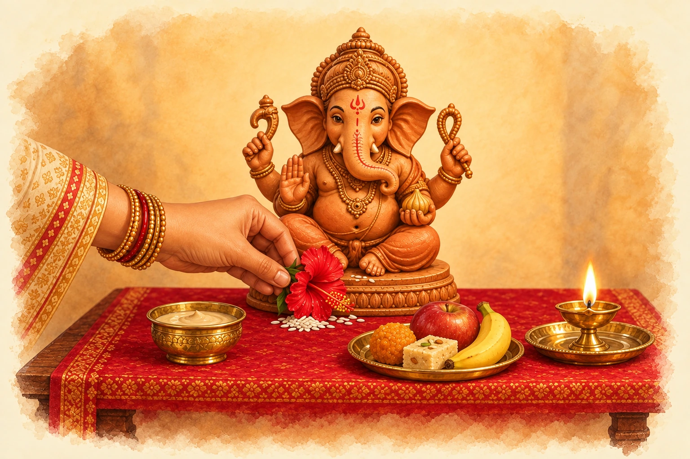
ganesha-puja · R2 hash e8b21b8126fc38a2विसर्जन तक प्रतिदिन दीप, पुष्प और नैवेद्य अर्पित करें। स्थायी प्रतिमा का विसर्जन न करें; उत्सव की मिट्टी की प्रतिमा का ही परम्परा अनुसार विसर्जन करें।
Offer a lamp, flowers and naivedya daily until visarjan. Never immerse a permanent murti; only the festival clay murti is immersed according to family tradition.
Image check: Ganesh with flower/akshat offering, food and a supervised lamp.
All three daily-seva categories visible; this is worship, not immersion, and permanent-murti warning remains text.navratri-ghatasthapana · REVIEWED1. मुहूर्त व स्थान · Choose the muhurat and place
panchang · R2 hash 3476f2fc731e40a2
पञ्चाङ्ग में अपने नगर का घटस्थापना मुहूर्त देखें और दिन के पहले भाग में स्वच्छ पूजा स्थान तैयार करें; रात्रि में स्थापना न करें।
Check the city-specific Ghatasthapana muhurat in Panchang and prepare a clean shrine during the first part of the day; do not install the kalash at night.
Image check: Panchang celestial/calendar painting.
Timing cue only; actual city/date/night restriction remain text, no invented clock time.navratri-ghatasthapana · UPDATED2. सामग्री सज्जा · Arrange the materials
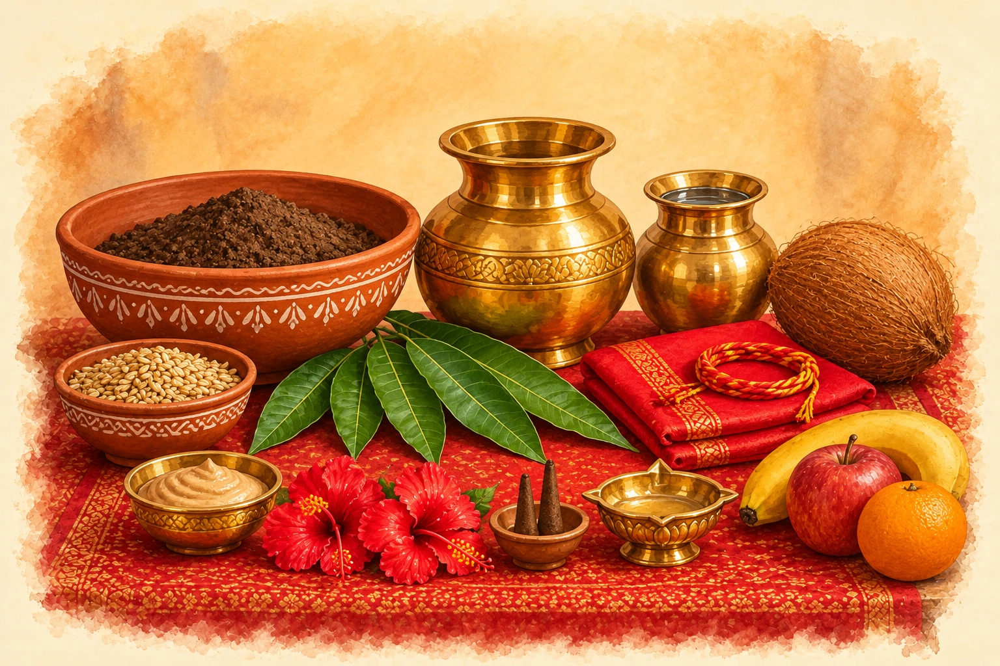
navratri-samagri · R2 hash 32651474583f3f9bमिट्टी, बीज, कलश, जल, पत्ते, नारियल, वस्त्र और पाँच उपचार एक साथ रख लें ताकि स्थापना बीच में न रुके।
Arrange the soil, seeds, kalash, water, leaves, coconut, cloth and five offerings together so the installation is not interrupted.
Image check: Unassembled soil, seeds, kalash, water, leaves, coconut, cloth and five offerings.
Preparation replaces an already-sowing-only scene; lamp/incense are unlit.navratri-ghatasthapana · REVIEWED3. नवरात्रि संकल्प · Navratri sankalp
sankalp · R2 hash 68b4497c5bd261a8
जल, अक्षत और पुष्प लेकर नौ दिनों की देवी-आराधना, संयम और परिवार के मंगल का संकल्प लें।
Hold water, akshat and a flower and resolve to observe nine days of Devi worship, self-discipline and prayer for the family’s well-being.
Image check: Water, akshat and red flower in right palm.
Devi-appropriate flower; no durva or tulsi offering shown.navratri-ghatasthapana · REVIEWED4. मिट्टी की पहली परत · First layer of soil
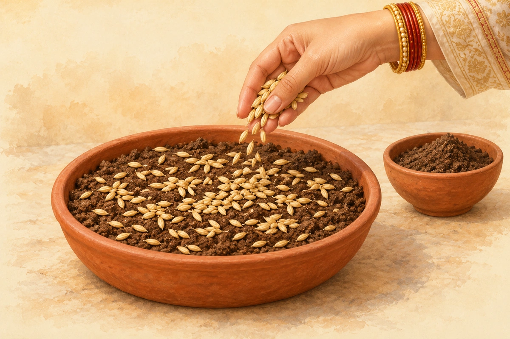
seed-bed · R2 hash 787af96448979940चौड़े पात्र में स्वच्छ मिट्टी की पहली परत बिछाकर उस पर सप्तधान्य या जौ समान रूप से फैलाएँ।
Spread the first layer of clean soil in the wide pot and distribute the seven grains or barley evenly over it.
Image check: Hand spreads grain seeds on the first soil layer.
Unsprouted stage, no finished ghata.navratri-ghatasthapana · UPDATED5. धान्य की तीन परतें · Build the grain bed
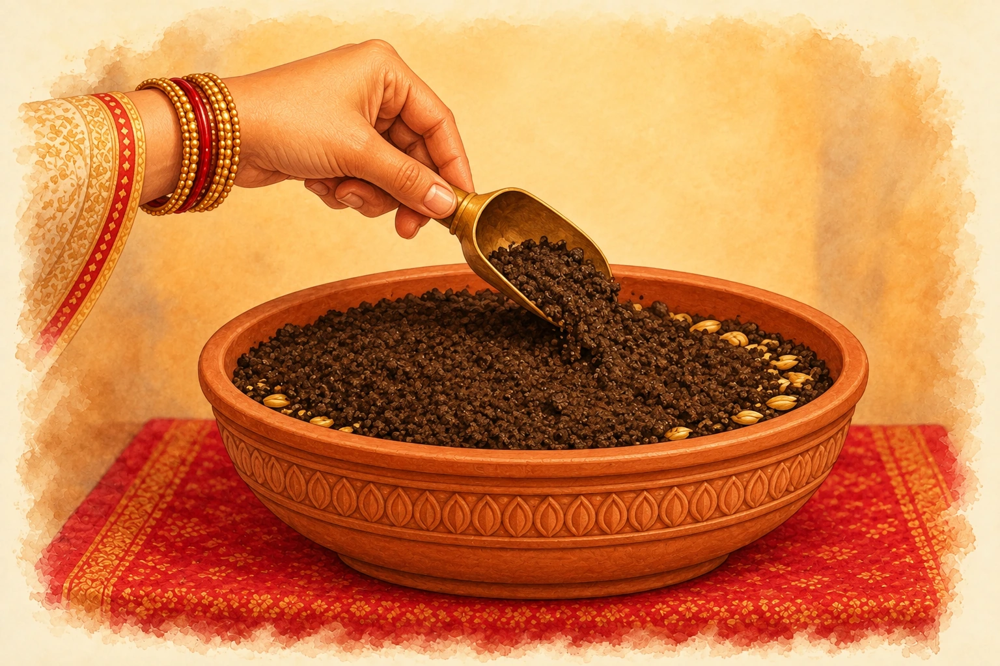
soil-layer · R2 hash c86dfc424e4d1aff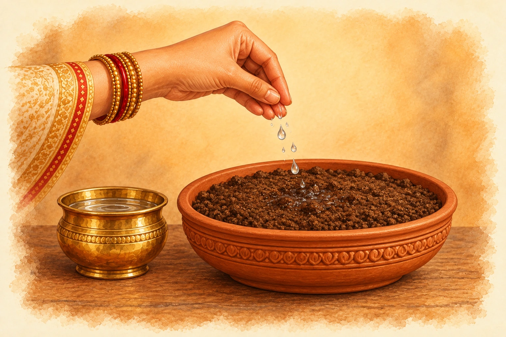
grain-bed-water · R2 hash 1bf8bf65ea6d45eeमिट्टी और बीज की दूसरी परत किनारों पर, फिर मिट्टी की तीसरी परत बिछाएँ; जमाने भर के लिए थोड़ा जल छिड़कें।
Add a second soil-and-seed layer near the rim, then a final soil layer; sprinkle only enough water to settle it.
Image check: Soil being layered over seeds, then a few water droplets settle the bed.
Distinct from first sowing; paired original clauses retain layer sequence.navratri-ghatasthapana · REVIEWED6. कलश में जल भरें · Fill the kalash
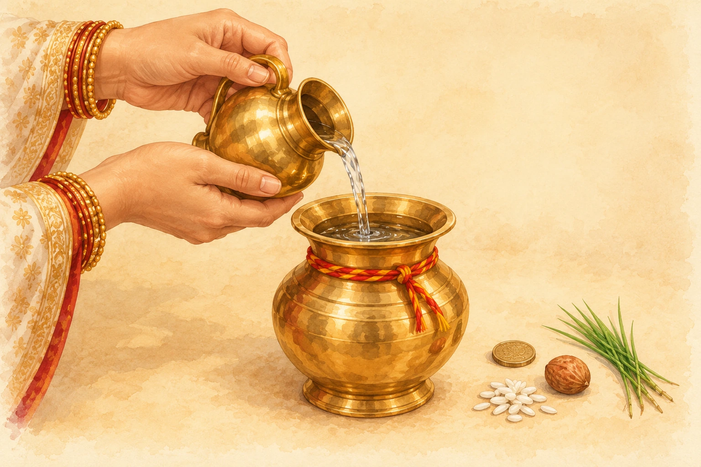
kalash-water · R2 hash d48bec123b09f0e6कलश के कण्ठ पर मौली बाँधें, उसमें शुद्ध जल भरकर सुपारी, सिक्का, अक्षत, दूर्वा और थोड़ा इत्र डालें।
Tie mauli around the kalash neck, fill it with clean water, and add betel nut, a coin, akshat, durva and a little perfume.
Image check: Kalash filled with clear water; mauli, betel nut, coin, akshat and durva beside it.
These leaves belong to the authored kalash ingredients, not a direct Durga-flower offering; perfume remains text.navratri-ghatasthapana · REVIEWED7. पत्ते व ढक्कन · Arrange leaves and lid
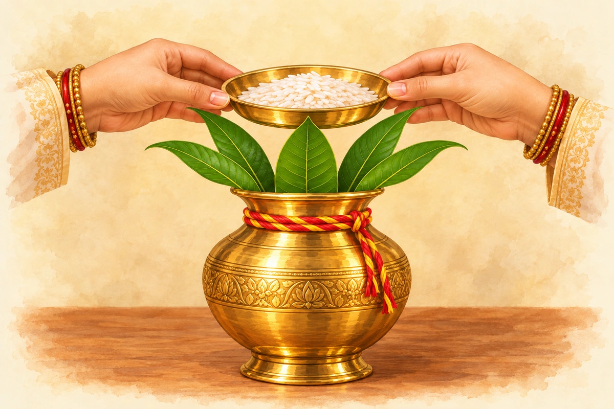
kalash-leaves · R2 hash 61c0d0562d759d26कलश के मुख पर पाँच आम या अशोक के पत्ते रखें, ढक्कन या कटोरी रखकर उस पर अक्षत भरें।
Arrange five mango or Ashoka leaves at the mouth, place the lid or small bowl over them, and fill it with akshat.
Image check: Leaves at kalash mouth and a rice-filled lid/bowl.
Exactly five leaves are the textual instruction; no coconut added prematurely.navratri-ghatasthapana · REVIEWED8. नारियल तैयार करें · Prepare the coconut
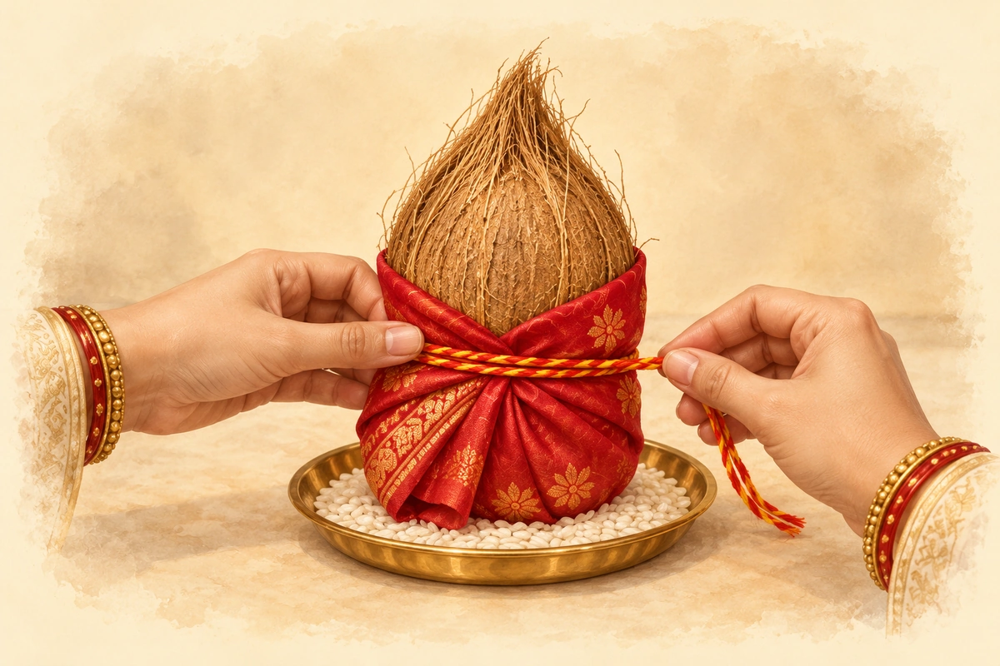
coconut · R2 hash c87036bc8afedabeसाबुत नारियल को लाल वस्त्र में लपेटकर मौली से बाँधें और उसका शीर्ष ऊपर रखते हुए ढक्कन पर रखें।
Wrap the whole coconut in red cloth, secure it with mauli, and place it upright over the lid.
Image check: Whole coconut wrapped with red cloth and tied mauli.
Coconut preparation matches; upright placement remains text.navratri-ghatasthapana · UPDATED9. घट स्थापना · Install the ghata
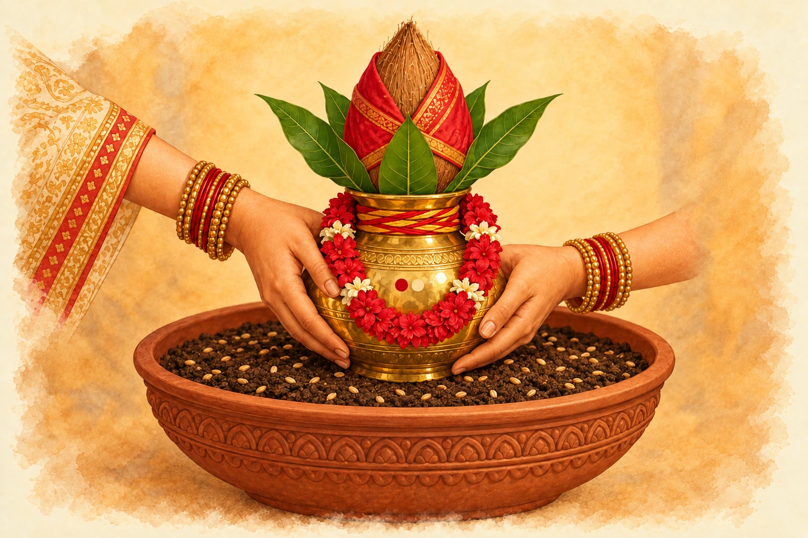
ghata-grain-bed · R2 hash 9f3e4b20bbe78560तैयार कलश को बोए हुए धान्य-पात्र के मध्य स्थिर रखें, कुमकुम-चन्दन का तिलक करें और पुष्प-माला अर्पित करें।
Set the prepared kalash firmly in the centre of the grain bed, apply kumkum and chandan, and offer flowers and a garland.
Image check: Hands place prepared wrapped-coconut kalash in the unsprouted grain bed; garland and simple kumkum/chandan dots.
Replaces standalone kalash on a stool; no premature green shoots or Shiva tripundra.navratri-ghatasthapana · REVIEWED10. माँ दुर्गा का आवाहन · Invoke Maa Durga
flowers-akshat · R2 hash 7fb6481546fe5cb9
हाथ में अक्षत-पुष्प लेकर माँ दुर्गा से नौ दिनों तक कलश में विराजने और पूजा स्वीकार करने की प्रार्थना करें।
Hold akshat and flowers and request Maa Durga to reside in the kalash and accept the worship through the nine nights.
Image check: Red flower and akshat in joined palms.
Devi invocation, no grass or prohibited leaf reuse.navratri-ghatasthapana · UPDATED11. पञ्चोपचार पूजा · Panchopachara puja
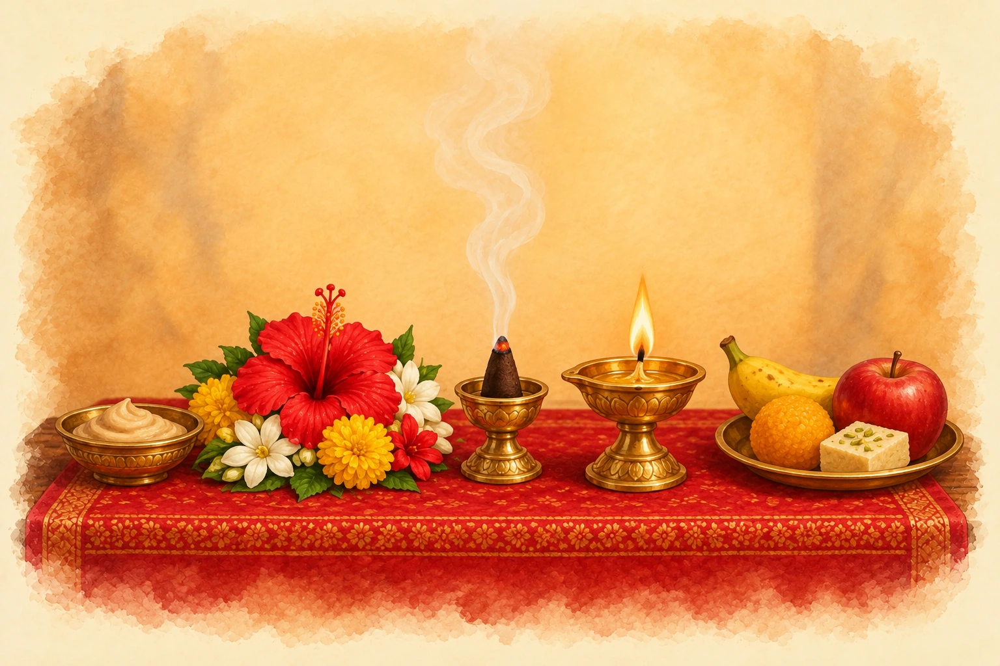
panchopachara · R2 hash 28bc51c513ed90e1क्रम से गन्ध, पुष्प, धूप, दीप और फल-मिठाई का नैवेद्य अर्पित करें।
Offer the five upacharas in order: fragrance, flowers, dhoop, dipa, and fruit or sweets as naivedya.
Image check: Five offering groups: fragrance, flowers, dhoop, diya, fruit/mithai.
All five represented, replacing the former two-item dhoop/deep image.navratri-ghatasthapana · REVIEWED12. या देवी सर्वभूतेषु — देवी स्तुति · Ya Devi Sarvabhuteshu — Devi stuti
prayer · R2 hash 6b951bae026329d6
हाथ जोड़कर देवी महात्म्य की "या देवी सर्वभूतेषु" स्तुति का पाठ करें — शक्ति रूप में विराजमान देवी की वन्दना।
With folded hands, recite the "Ya Devi Sarvabhuteshu" stuti from the Devi Mahatmya — salutations to the Goddess who resides in all beings as Shakti.
Image check: Folded-hands seated prayer.
Exact Ya Devi Sarvabhuteshu text remains the shipped-text hand-off.navratri-ghatasthapana · REVIEWED13. नवरात्रि आरम्भ पाठ · Navratri opening reading
scripture · R2 hash 34c0d266398bdfab
परिवार सहित नवरात्रि आरम्भ की कथा पढ़ें और पहले दिन माँ शैलपुत्री का स्मरण करें।
Read the Navratri opening story with the family and remember Maa Shailaputri on the first day.
Image check: Open book.
Exact day-one/Shailaputri reading remains the hand-off; no wrong deity artwork.navratri-ghatasthapana · UPDATED14. माँ दुर्गा की आरती · Maa Durga aarti
aarti-neutral · R2 hash 4792f1ad501033e2
दीप से आरती करें और परिवार सहित जय अम्बे गौरी गाएँ।
Offer aarti with the lamp and sing Jai Ambe Gauri with the family.
Image check: Flower-free ghee-lamp aarti plate.
Exact Jai Ambe Gauri remains a hand-off.navratri-ghatasthapana · REVIEWED15. नौ दिनों की सेवा · Care through the nine days
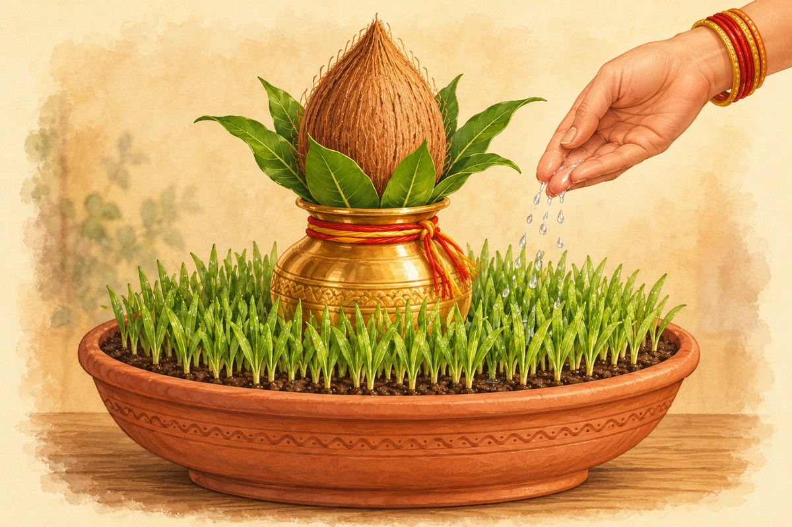
sprouts · R2 hash 3a8b355312f3dce5प्रतिदिन थोड़ा जल देकर अंकुर नम रखें और दीप केवल सुरक्षित निगरानी में जलाएँ। दशमी पर परिवार की परम्परा अनुसार घट का विसर्जन करें।
Moisten the sprouts lightly each day and keep a lamp burning only under safe supervision. On Dashami, conclude and immerse the ghata according to family tradition.
Image check: Light moistening of living sprouts around the installed kalash.
Correct later growing stage; supervised lamp and tradition-dependent Dashami conclusion remain text.karwa-chauth-puja · REVIEWED1. प्रातः व्रत-संकल्प · Morning vrat sankalp
prayer · R2 hash 6b951bae026329d6
स्नान के बाद अपने स्वास्थ्य और पारिवारिक परम्परा के अनुरूप व्रत का संकल्प लें और चन्द्र-दर्शन के बाद पारण का निश्चय करें।
After bathing, take the vrat sankalp according to your health and family tradition, resolving to conclude it after moon sighting.
Image check: Quiet folded-hands prayer.
Sankalp cue; health/custom/moon completion conditions remain text.karwa-chauth-puja · REVIEWED2. पूजा वेदी सज्जा · Prepare the puja altar
altar-preparation · R2 hash c23e1771c498b20e
चौकी पर लाल वस्त्र बिछाकर गौरा या चौथ माता तथा शिव परिवार का चित्र स्थापित करें; सामने अक्षत का छोटा मंडल बनाएँ।
Cover the chowki with red cloth, place Gaura or Chauth Mata and the Shiva family image, and make a small akshat mandala in front.
Image check: Hands cover the chowki with red cloth.
Shows preparation only; Gaura/Chauth Mata and Shiva-family image placement remain text, no unrelated deity shown.karwa-chauth-puja · REVIEWED3. करवा व थाली तैयार करें · Prepare the karwa and thali
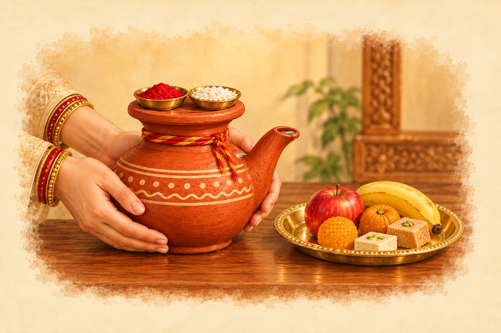
karwa · R2 hash 5b81b895f1ea674aकरवे में जल या दूध भरकर मौली बाँधें; ढक्कन पर रोली-अक्षत, फल, मिठाई और पूजा की थाली सजाएँ।
Fill the karwa with water or milk and tie mauli around it; arrange roli-akshat, fruit, sweets and the puja thali on its lid.
Image check: Spouted clay karwa with lid, mauli, roli/akshat, fruit and sweets.
Matches the karwa/thali materials; filling with water/milk remains text.karwa-chauth-puja · UPDATED4. दीप व गणेश पूजन · Lamp and Ganesha worship
ganesha-puja · R2 hash e8b21b8126fc38a2
दीप जलाकर श्री गणेश का स्मरण करें और गन्ध, पुष्प, अक्षत तथा नैवेद्य अर्पित कर पूजा निर्विघ्न होने की प्रार्थना करें।
Light the lamp, remember Shri Ganesha, and offer fragrance, flowers, akshat and naivedya while praying for an unobstructed puja.
Image check: Ganesh receives red flower/akshat with chandan, food and lamp nearby.
Matches the named offerings; no durva or tulsi added to this step.karwa-chauth-puja · REVIEWED5. गौरा व चौथ माता पूजन · Gaura and Chauth Mata puja
flowers-akshat · R2 hash 7fb6481546fe5cb9
गौरा और चौथ माता रूप में माँ पार्वती को रोली, सिन्दूर, अक्षत, पुष्प और नैवेद्य अर्पित करें।
Worship Maa Parvati as Gaura and Chauth Mata with roli, sindoor, akshat, flowers and naivedya.
Image check: Red flower and akshat held for offering.
Relevant Parvati/Chauth Mata flower cue; roli/sindoor/naivedya remain text.karwa-chauth-puja · UPDATED6. शिव परिवार पूजन · Shiva family worship
sankalp-lotus · R2 hash 57604d8f2e79624b
क्रम से भगवान शिव, कार्तिकेय और श्री गणेश को पुष्प, अक्षत और नैवेद्य अर्पित करें।
Offer flowers, akshat and naivedya in order to Lord Shiva, Kartikeya and Shri Ganesha.
Image check: Lotus and akshat in an offering palm.
Suitable flower example without reused hibiscus aimed at Shiva; deity order and naivedya remain text.karwa-chauth-puja · REVIEWED7. करवा अर्पण · Offer the karwa
karwa · R2 hash 5b81b895f1ea674a
भरे हुए करवे पर रोली-अक्षत लगाकर उसे चौथ माता के सम्मुख रखें और परिवार के सौभाग्य व मंगल की प्रार्थना करें।
Apply roli and akshat to the filled karwa, place it before Chauth Mata, and pray for the family’s well-being.
Image check: Filled decorated spouted karwa and roli/akshat materials.
Relevant vessel offering; Chauth Mata placement/prayer remain text.karwa-chauth-puja · REVIEWED8. करवा चौथ व्रत कथा · Karwa Chauth vrat katha
scripture · R2 hash 34c0d266398bdfab
समूह या परिवार के साथ करवा चौथ व्रत कथा सुनें; कथा के समय करवा और पूजा-थाली अपने सामने रखें।
Listen to the Karwa Chauth vrat katha with the group or family, keeping the karwa and puja thali before you.
Image check: Open book.
The exact Karwa Chauth katha is handed off; prepared karwa/thali remains a text condition.karwa-chauth-puja · UPDATED9. थाली फेरना व आशीर्वाद · Pass the thali and receive blessings
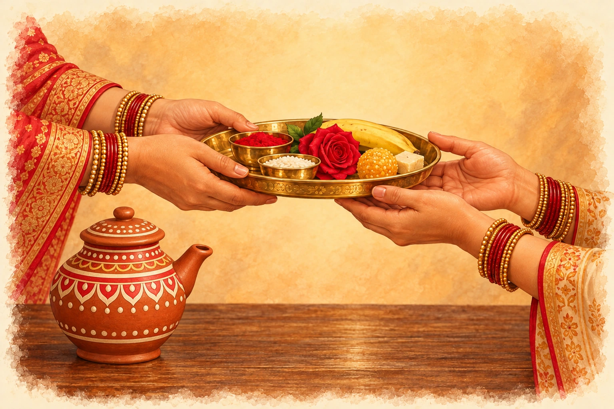
thali-phera · R2 hash b278fa804b898cb2पारिवारिक रीति हो तो गीत या कथा के साथ पूजा-थाली फेरें और परिवार की वरिष्ठ सुहागिनों का आशीर्वाद लें।
Where followed in the family, pass the puja thali with the traditional song or story and receive blessings from senior married women.
Image check: Two pairs of hands pass a thali; a spouted, lidded karwa nearby.
Actual passing replaces static karwa image; custom remains conditional and no rotation direction is invented.karwa-chauth-puja · UPDATED10. करवा दान · Karwa dana
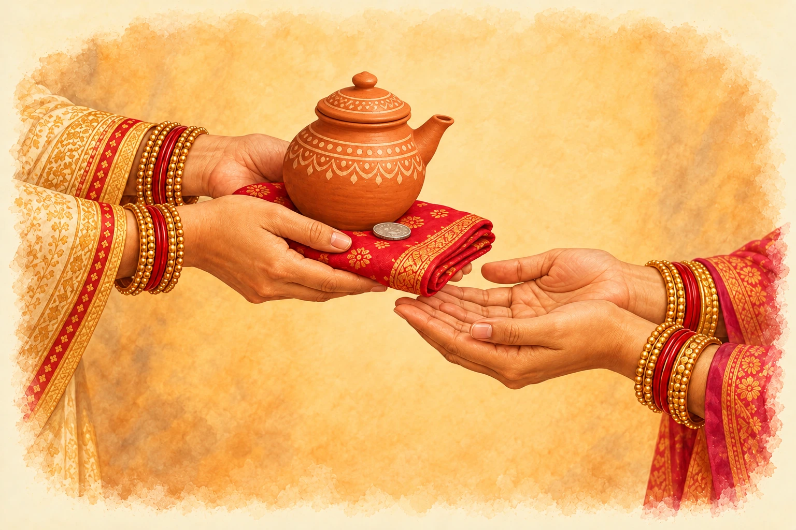
karwa-dana · R2 hash dfad0388a68265d2परम्परा अनुसार करवा, वस्त्र या दक्षिणा किसी ब्राह्मण अथवा पात्र सुहागिन को सम्मानपूर्वक अर्पित करें।
According to tradition, respectfully offer the karwa, cloth or dakshina to a Brahmin or an eligible married woman.
Image check: Hands give a spouted, lidded karwa on folded cloth with dakshina to receiving hands.
Actual donation; no invented caste marker, amount or mandatory recipient.karwa-chauth-puja · REVIEWED11. चन्द्र-दर्शन व अर्घ्य · Moon sighting & arghya
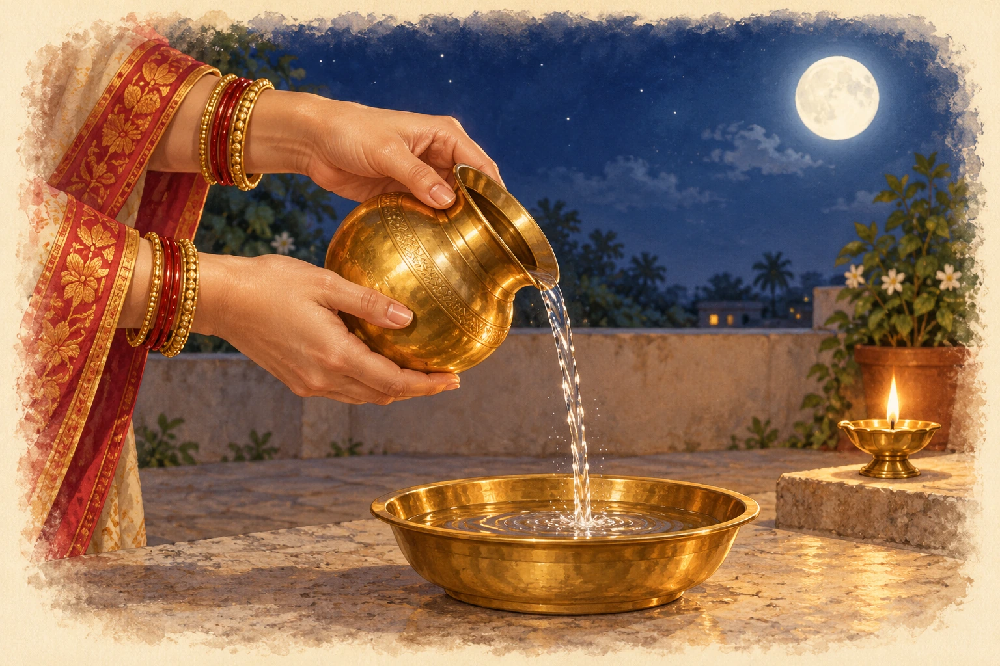
moon-arghya · R2 hash dfc9c8f292b18d75चन्द्रमा उदय होने पर दर्शन करें, लोटे से धीरे-धीरे जल का अर्घ्य दें और दीप दिखाकर प्रणाम करें। छलनी का प्रयोग केवल अपनी पारिवारिक रीति हो तो करें।
After moonrise, view the Moon, pour water slowly as arghya, show the lamp and bow. Use a sieve only if it belongs to your family custom.
Image check: Clear water poured as arghya under visible Moon; lamp separated safely.
No sieve shown as mandatory; custom qualifier remains text.karwa-chauth-puja · REVIEWED12. पारण व प्रसाद · Parana & prasad
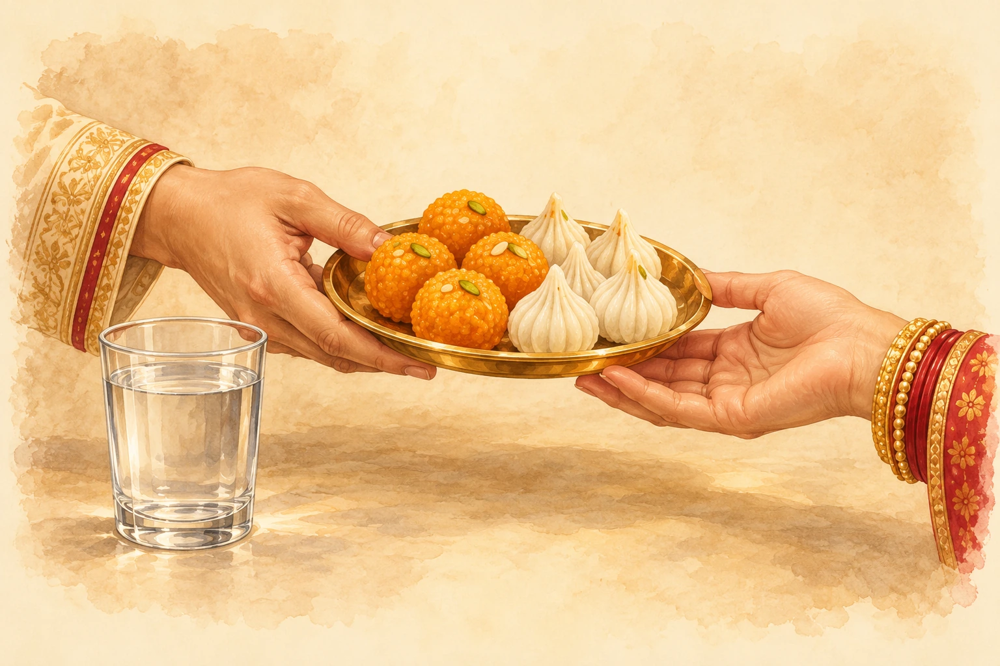
prasad · R2 hash 19f7a175c5d863d2पारिवारिक रीति अनुसार जल ग्रहण कर व्रत खोलें, चौथ माता को प्रणाम करें और प्रसाद बाँटें। स्वास्थ्य की आवश्यकता को व्रत से ऊपर रखें।
According to family custom, receive water and conclude the fast, bow to Chauth Mata, and share prasad. Put health needs before fasting rules.
Image check: Hands share prasad; a separate glass of water visible.
Relevant sharing and water cue; receiving/drinking/bowing and health priority remain text.maha-shivaratri-puja · UPDATED1. व्रत व रात्रि-पूजा की तैयारी · Prepare for the fast and night puja
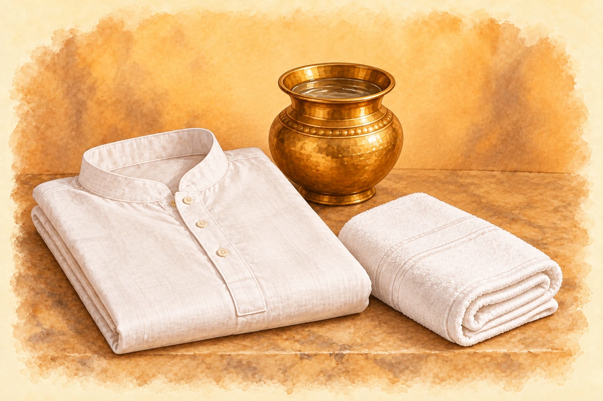
clean-clothes · R2 hash b32993cffa3f4a30अपने स्वास्थ्य के अनुरूप व्रत रखें, पूजा से पहले स्नान कर स्वच्छ वस्त्र पहनें और रात्रि-पूजा के लिए सामग्री एकत्र करें।
Observe the fast according to your health, bathe and wear clean clothes before puja, and gather the materials for night worship.
Image check: Clean folded white kurta and towel with a water pot.
Personal preparation, not deity shringar; removed hibiscus basket.maha-shivaratri-puja · REVIEWED2. शिवलिङ्ग स्थापना · Place the Shiva-linga
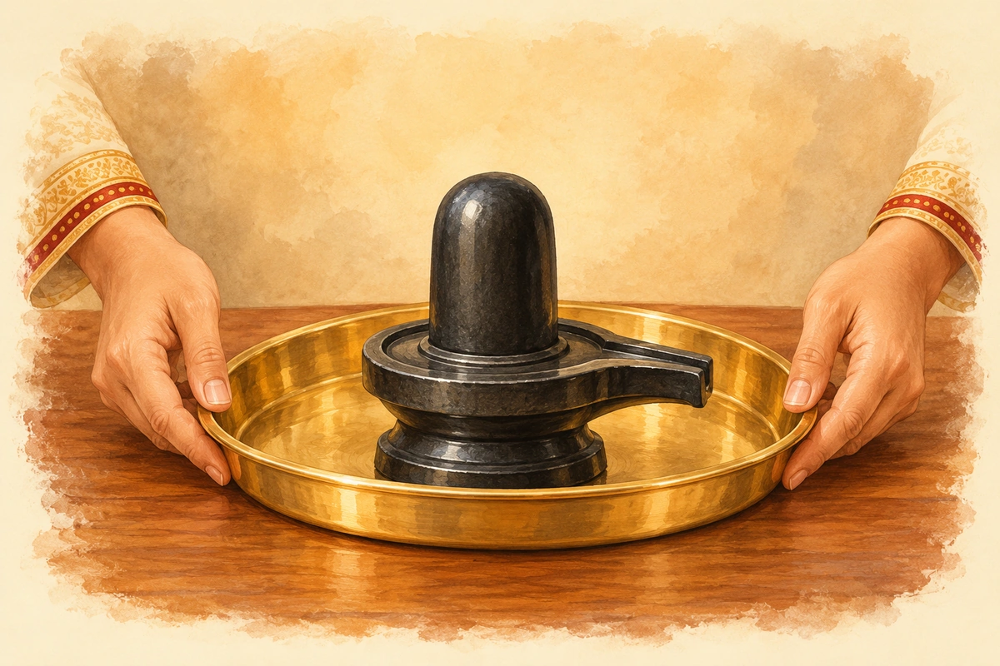
shiva-linga · R2 hash 4d6172d56db31626शिवलिङ्ग को ऐसी थाली या अभिषेक पात्र में रखें जिससे अर्पित द्रव्य स्वच्छता से एकत्र हो सके; चित्र हो तो अभिषेक न करें।
Place the Shiva-linga in a tray that can collect the offerings cleanly; do not pour abhisheka liquids over a picture.
Image check: Hands place Shiva-linga in a receiving tray.
Correct object and collection tray; no liquids poured over a picture.maha-shivaratri-puja · UPDATED3. शिवरात्रि संकल्प · Shivaratri sankalp
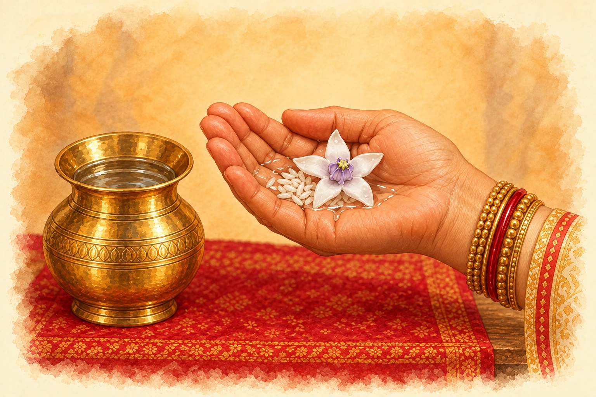
sankalp-white · R2 hash f0dee81d8713d9aeजल, अक्षत और पुष्प लेकर अपना नाम, गोत्र और तिथि बोलें तथा श्रद्धापूर्वक शिवरात्रि व्रत-पूजा का संकल्प लें।
Hold water, akshat and a flower; state your name, gotra and tithi, and resolve to perform the Shivaratri vrat-puja with devotion.
Image check: Right palm holds water, akshat and identifiable white aak flower.
Replaces generic red hibiscus; no tulsi/ketaki/champaka.maha-shivaratri-puja · UPDATED4. ध्यान व आवाहन · Dhyana & avahana
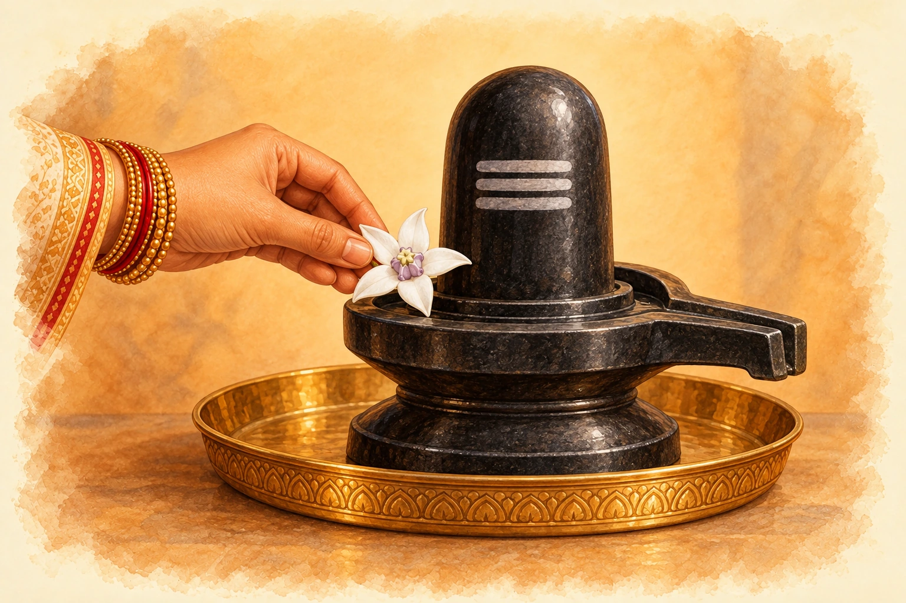
shiva-flower · R2 hash 06ef106e01952d7bभगवान शिव का ध्यान करें, हाथ में पुष्प लेकर आवाहन करें और पुष्प शिवलिङ्ग या चित्र के समीप रखें।
Meditate on Lord Shiva, invoke Him while holding a flower, and place it beside the Shiva-linga or picture.
Image check: Hand offers a white aak flower beside the linga.
Flower invocation replaces the unrelated placement action; meditation remains text.maha-shivaratri-puja · UPDATED5. आसन, पाद्य व अर्घ्य · Asana, padya & arghya
water-offering-neutral · R2 hash a4d76ca3aa0562b2
पुष्प से आसन और थोड़े जल से पाद्य, अर्घ्य तथा आचमन प्रतीक रूप में अर्पित करें।
Symbolically offer a seat with flowers and small amounts of water for padya, arghya and achamana.
Image check: A little clear water spooned into receiving bowl.
No hibiscus decoration; symbolic seat/flower offering remains text.maha-shivaratri-puja · REVIEWED6. जलाभिषेक · Water abhisheka
shiva-abhishek · R2 hash bf6e97f3d4824daa
शिवलिङ्ग पर शुद्ध जल या गंगाजल की पतली धारा चढ़ाएँ; जल व्यर्थ न बहाएँ।
Pour a gentle stream of clean water or Gangajal over the Shiva-linga without wasting water.
Image check: Thin transparent water stream over linga into receiving tray.
Clean-water bath, no milk stream or overflow.maha-shivaratri-puja · UPDATED7. पञ्चामृत अभिषेक · Panchamrit abhisheka
shiva-panchamrit · R2 hash 5013931578b43d5e
क्रम से दूध, दही, घी, शहद और शक्कर बहुत थोड़ी मात्रा में अर्पित करें। घर की रीति संक्षिप्त हो तो केवल जल और दूध पर्याप्त रखें।
Offer small quantities of milk, curd, ghee, honey and sugar in order. For a shorter family observance, use only water and milk.
Image check: Small milky stream over linga into tray.
Actual milk bath replaces ingredient-only picture; curd/ghee/honey/sugar order and shorter alternative remain text.maha-shivaratri-puja · REVIEWED8. शुद्धोदक स्नान · Final clean-water bath
shiva-abhishek · R2 hash bf6e97f3d4824daa
पञ्चामृत के बाद शुद्ध जल से शिवलिङ्ग को अच्छी तरह स्नान कराकर साफ करें।
After panchamrit, rinse and cleanse the Shiva-linga thoroughly with clean water.
Image check: Thin clear-water stream rinses linga into receiving tray.
Distinct from milk/panchamrit image.maha-shivaratri-puja · REVIEWED9. चन्दन व भस्म · Chandan & sacred ash
shiva-gandha · R2 hash 440e0f0635e60794
चन्दन और भस्म अर्पित करें; शिवलिङ्ग पर कुमकुम या हल्दी लगाने के बजाय उन्हें पूजा-थाली तक सीमित रखें।
Offer chandan and sacred ash; keep kumkum and turmeric on the puja thali rather than applying them to the Shiva-linga.
Image check: Separate beige chandan and white sacred-ash bowls.
No red kumkum or yellow turmeric applied to linga; exclusion remains text.maha-shivaratri-puja · UPDATED10. बिल्वपत्र व पुष्प · Bilva leaves & flowers
shiva-bilva-datura · R2 hash 7a59032586319399
स्वच्छ, अखण्ड बिल्वपत्र चिकनी ओर नीचे रखकर अर्पित करें, फिर सफेद पुष्प और उपलब्ध हो तो धतूरा या आक चढ़ाएँ।
Offer clean, unbroken bilva leaves with the smooth side down, followed by white flowers and, when available, datura or aak.
Image check: Intact three-leaflet bilva sprig and recognizable white datura trumpets at linga.
Replaces ambiguous jasmine-like blossoms; optional datura is explicitly allowed by authored text; leaf placement/orientation remains text.maha-shivaratri-puja · UPDATED11. धूप व दीप · Dhoop & dipa
dhoop-deep-neutral · R2 hash 7adfc5689a875991
धूप दिखाएँ और घी का दीपक घुमाकर प्रकाश अर्पित करें; दीप को बिल्वपत्र और वस्त्र से दूर रखें।
Present dhoop and circle the ghee lamp, keeping the flame away from bilva leaves and cloth.
Image check: Dhoop and lamp well separated on stone.
No hibiscus or cloth near flame; bilva kept away as text directs.maha-shivaratri-puja · UPDATED12. नैवेद्य · Naivedya
vrat-naivedya · R2 hash d05f9fff70097a88
फल, व्रत की मिठाई और जल अर्पित करें; सात्त्विक और बिना चखे नैवेद्य रखें।
Offer fruit, vrat sweets and water; keep the naivedya sattvic and untasted.
Image check: Fruit, plain milk-sweet examples, dry fruits and water.
No modaks or grain pastries implying a vrat recipe; actual fasting ingredients still follow family practice.maha-shivaratri-puja · REVIEWED13. पञ्चाक्षरी शिव-जप · Panchakshara Shiva japa
prayer · R2 hash 6b951bae026329d6
शान्त होकर पञ्चाक्षरी शिव-मन्त्र का अपनी क्षमता अनुसार जप करें और मन को भगवान शिव में स्थिर रखें।
Sit quietly and repeat the Panchakshara Shiva mantra as many times as comfortable, keeping the mind on Lord Shiva.
Image check: Seated folded-hands devotee.
Quiet japa cue; no invented count or generated mantra.maha-shivaratri-puja · REVIEWED14. महाशिवरात्रि व्रत कथा · Maha Shivaratri vrat katha
scripture · R2 hash 34c0d266398bdfab
परिवार सहित महाशिवरात्रि व्रत कथा पढ़ें या सुनें।
Read or listen to the Maha Shivaratri vrat katha with the family.
Image check: Open book on a stand.
Exact Shivaratri katha remains hand-off.maha-shivaratri-puja · UPDATED15. शिव आरती · Shiva aarti
aarti-neutral · R2 hash 4792f1ad501033e2
कपूर या घी के दीप से आरती करें और परिवार सहित ॐ जय शिव ओंकारा गाएँ।
Offer aarti with camphor or a ghee lamp and sing Om Jai Shiv Omkara with the family.
Image check: Flower-free ghee-lamp aarti plate.
No unsuitable flower decoration; exact Om Jai Shiv Omkara remains hand-off.maha-shivaratri-puja · REVIEWED16. क्षमा, जागरण व पारण · Forgiveness, vigil & parana
prayer · R2 hash 6b951bae026329d6
पूजा की त्रुटियों के लिए क्षमा माँगें। इच्छा और स्वास्थ्य हो तो रात्रि-जागरण या चार प्रहर में जलाभिषेक करें; अगले दिन पञ्चाङ्ग के पारण समय में व्रत खोलें।
Ask forgiveness for any lapses. If health and circumstances allow, keep vigil or repeat water abhisheka in the four praharas; conclude the fast next day at the Panchang parana time.
Image check: Quiet seated prayer.
Forgiveness/vigil cue; optional prahara abhisheka and actual Panchang parana time remain text.shraddha-tarpan-vidhi · REVIEWED1. इस मार्गदर्शिका की सीमा · Know the scope of this guide
remembrance-vessels · R2 hash f1722c5a1bea064d
यह घर पर किया जाने वाला सीमित तिल-तर्पण स्मरण है, सम्पूर्ण श्राद्ध नहीं। पिण्डदान, होम, भोजन और शाखा-विशेष विधान के लिए अपनी पारिवारिक परम्परा या योग्य आचार्य का मार्गदर्शन लें।
This is a limited household tila-tarpana remembrance, not a complete Shraddha. Follow your family tradition or a qualified officiant for pinda, homa, bhojana and branch-specific rites.
Image check: Separate offering and collecting vessels, black sesame and clean cloth.
Flame-free remembrance materials; does not imply complete Shraddha rites.shraddha-tarpan-vidhi · REVIEWED2. तिथि और पारिवारिक रीति देखें · Confirm the date and family practice
panchang · R2 hash 3476f2fc731e40a2
पुण्यतिथि या पितृ पक्ष की दिखाई गई तिथि देखें। परिवार में समय, दिशा या विधान निश्चित हो तो उसी को प्राथमिकता दें; यह मार्गदर्शिका उनका स्थान नहीं लेती।
Confirm the displayed annual or Pitru Paksha date. Give priority to any timing, direction or method followed by your family; this guide does not replace it.
Image check: Panchang calendar/celestial cue.
No fixed tithi/time/direction introduced.shraddha-tarpan-vidhi · REVIEWED3. स्वच्छ स्थान तैयार करें · Prepare a clean place
remembrance-vessels · R2 hash f1722c5a1bea064d
शान्त, स्वच्छ स्थान पर आसन रखें। जल चढ़ाने वाला पात्र और अर्पित जल समेटने का पात्र अलग रखें; इस संक्षिप्त विधि में अग्नि या जलाशय की आवश्यकता नहीं है।
Set a seat in a quiet, clean place. Keep the offering vessel separate from the bowl that will collect the water; this concise guide needs neither a flame nor a water body.
Image check: Separate clean vessels and cloth.
Clean place/materials cue; no flame or water body.shraddha-tarpan-vidhi · REVIEWED4. स्मरण का संकल्प · Set the remembrance intention
prayer · R2 hash 6b951bae026329d6
जिन पितरों का स्मरण कर रहे हैं, उन्हें मन में याद करें। नाम, गोत्र और संकल्प-वाक्य केवल अपनी पारिवारिक रीति के अनुसार बोलें; यहाँ कोई निश्चित मन्त्र या सूत्र नहीं दिया गया है।
Bring to mind the ancestors being remembered. State names, gotra or a sankalpa formula only according to your family practice; this guide supplies no fixed mantra or formula.
Image check: Quiet folded-hands remembrance.
No names, gotra formula, ritual thread position or mantra invented.shraddha-tarpan-vidhi · REVIEWED5. तिल-जल तैयार करें · Prepare sesame water
sesame-water · R2 hash d6297ed3d8f31823
स्वच्छ जल में थोड़ा काला तिल रखें। कुश या दर्भ का प्रयोग केवल तभी करें जब वह आपकी पारिवारिक रीति में हो और उसका सही उपयोग ज्ञात हो।
Place a small amount of black sesame in clean water. Use kusha or darbha only when it belongs to your family practice and you know its proper use.
Image check: Black sesame added to clean water.
No kusha shown as mandatory.shraddha-tarpan-vidhi · REVIEWED6. तिल-जल अर्पित करें · Offer the sesame water
tarpana · R2 hash fedd660c96614cb6
पितरों का श्रद्धापूर्वक स्मरण करते हुए थोड़ा तिल-जल नीचे रखे स्वच्छ पात्र में अर्पित करें। संख्या, दिशा, यज्ञोपवीत की स्थिति और क्रम अपनी परम्परा के अनुसार रखें; अनजान सूत्र की नकल न करें।
Remember the ancestors reverently and offer a small stream of sesame water into the clean vessel below. Follow your tradition for count, direction, sacred-thread position and order; do not imitate an unfamiliar formula.
Image check: Visible sesame grains in a small stream poured into a separate collecting vessel.
Not plain water; no count/direction/thread rule or portrait.shraddha-tarpan-vidhi · REVIEWED7. मौन स्मरण · Pause in remembrance
prayer · R2 hash 6b951bae026329d6
कुछ समय मौन बैठें, कृतज्ञता व्यक्त करें और परिवार के दिवंगत सदस्यों को स्मरण करें। यह भावपूर्ण विराम किसी पूर्ण श्राद्ध-विधान का विकल्प नहीं है।
Sit quietly for a few moments, express gratitude and remember departed family members. This reflective pause is not a substitute for a complete Shraddha rite.
Image check: Quiet seated folded-hands devotee.
Reflective pause only, no deity/ancestor portrait.shraddha-tarpan-vidhi · REVIEWED8. वैकल्पिक गीता पाठ — अध्याय १५ · Optional Gita reading — Chapter 15
scripture · R2 hash 34c0d266398bdfab
इच्छा हो तो भगवद् गीता का पन्द्रहवाँ अध्याय स्मरण-पाठ के रूप में पढ़ें। यह पाठ तर्पण या श्राद्ध-विधान का स्थान नहीं लेता।
If desired, read Bhagavad Gita Chapter 15 as remembrance. This reading does not replace tarpana or Shraddha rites.
Image check: Open book on a stand.
Optional exact Gita 15 hand-off; no generated substitute verse.shraddha-tarpan-vidhi · REVIEWED9. वैकल्पिक गीता पाठ — अध्याय २ · Optional Gita reading — Chapter 2
scripture · R2 hash 34c0d266398bdfab
परिवार की इच्छा हो तो भगवद् गीता का दूसरा अध्याय पढ़ें और फिर इसी विधि पर लौटें। इसे अनिवार्य कर्म या श्राद्ध का विकल्प न मानें।
If the family wishes, read Bhagavad Gita Chapter 2 and then return here. Treat it as optional remembrance, not an obligatory act or a substitute for Shraddha.
Image check: Open book on a stand.
Optional exact Gita 2 hand-off; no new mandatory rite.shraddha-tarpan-vidhi · REVIEWED10. समापन और स्वच्छता · Conclude and clean up
remembrance-vessels · R2 hash f1722c5a1bea064d
नमस्कार कर स्मरण पूर्ण करें। समेटे हुए जल का निस्तारण अपनी पारिवारिक रीति और स्थानीय स्वच्छता नियमों के अनुसार करें; सार्वजनिक जल या स्थान को दूषित न करें, फिर पात्र और हाथ साफ करें।
Bow and conclude the remembrance. Dispose of the collected water according to family practice and local hygiene rules without polluting public water or spaces, then clean the vessels and your hands.
Image check: Clean separated vessels and cloth.
Conclusion/cleanup materials cue; disposal method and hygiene remain text.